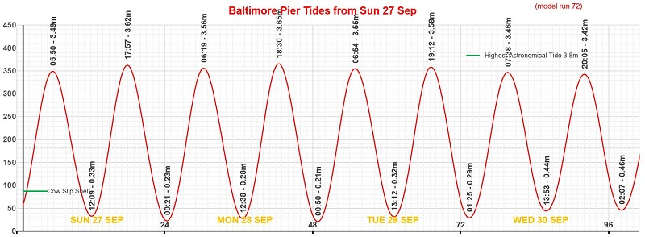
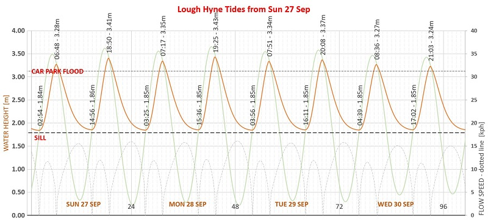
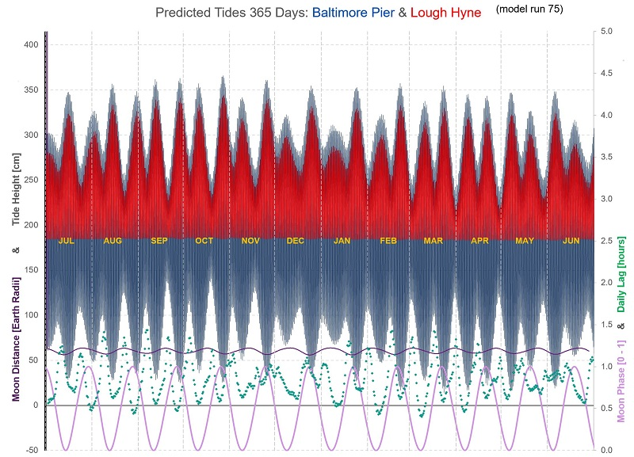
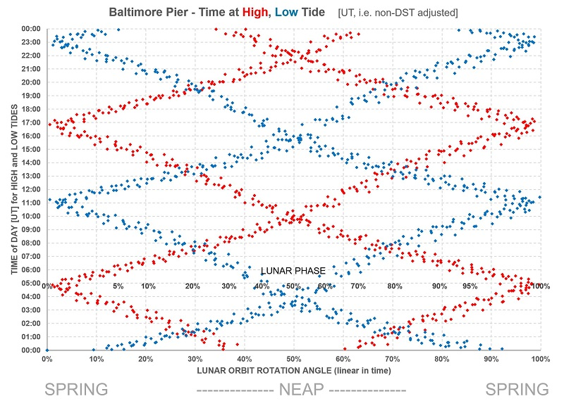
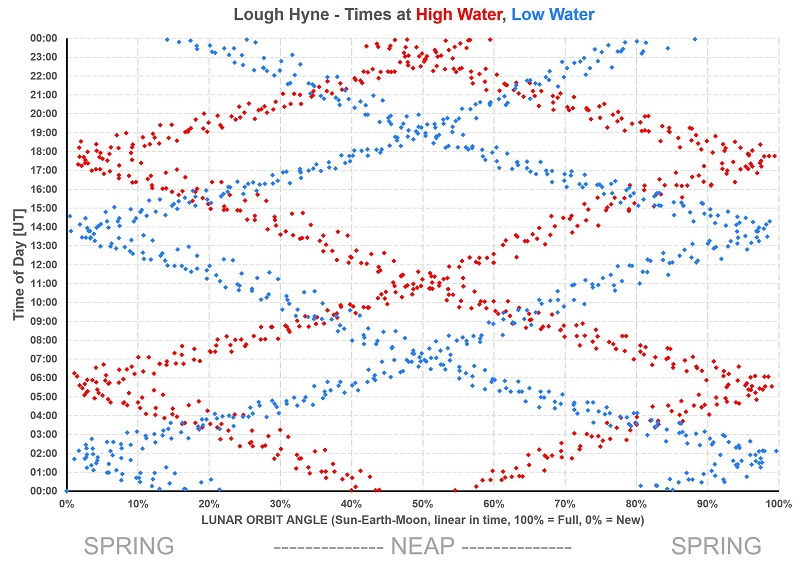

Predicted Tides at Baltimore Pier and Lough Hyne (plus 365-day chart and table)

(click on charts for higher-res images)

The Baltimore Pier tide predictions are computed by a mathematical model based on values derived from tide-height data collected at random times at Baltimore Pier since 2024. Sea-level
heights are established by photographing the steel ladders at the Pier, a useful measurement scale. Pressure is recorded too, since mean sea level
varies approximately 1cm for every unit of pressure.
The height and pressure data, combined with the prevailing astronomical positions of the Sun and Moon, allow one to solve for a set of harmonic constants (wave amplitudes and phase-lags)
for the multiple tidal constituents (M2, S2, N2, K2, M4 and many more), arriving at a “best fit” to the data collected.
These harmonic constants serve as a unique "fingerprint" of our tide at the Pier, and can be usefully used to predict. As more data gets collected, the more accurate
the model becomes.
The Lough Hyne predictions are produced by simulating, using channel-flow theory and the relative level of the outer sea tide as established above, the rate of flow entering or departing the
Lough and thus the incremental volume and, knowing the surface area, the rise or fall of Lough Hyne's water level.
You may notice that when refreshing from one day to the next, the time and height of, say, Tuesday’s predicted high tide changes slightly. That will most likely be a result of me
having collected some extra data-points from the Pier at Baltimore and re-calibrating the model with the new data. It will make the refreshed predictions slightly more accurate,
and will of course have a similar knock-on effect to the predictions for Lough Hyne.
Similarly, if you compare the full 365-day table of predictions with the front-page daily-refreshed ones, you’ll see that they may show slightly different predicted heights and
times. This is because I only update the full 365-day table occasionally for the latest data, so it will be working off a different version.
Full 365 Days of Tides
day by day data tabulated below

- main block of wavy data: each high and low through the year [scale in cm on LHS]
- upper slightly wavy purple line: Lunar distance from Earth [Earth Radii using LHS]
- green dots: extent, in hours, by which this tide exceeds previous tide minus 24 hours [RH scale]
- lowest pink oscillating line: Moon Phase [0-1 using RH scale i.e. 0-100%]
- air pressure assumed as standard atmospheric pressure at sea-level, i.e. 1013.25 hPa (aka millibars Mercury). Mean sea level
varies by ~1cm (0.01m) per hPa, so tide height should be adjusted up for pressures below 1013.25, and down for
pressures above (inverse barometer effect).
High and Low Tide Times (UT i.e. no DST adjustment) plotted against Sun-Earth-Moon angle (& phase)

- Each red point represents a High Tide, and each blue is a Low Tide, for all the tides of 2026;
- Any year will have the same general pattern;
- x-values (rotation angle and phase) close to 0% and 100% represent New Moon and Full Moon respectively, i.e. Spring Tides;
- x-value close to 50% represents a Half Moon thus a Neap Tide;
- the chart shows, for example, that a Spring high tide will generally happen around or close to 5pm (6pm in summer);
- also, the Christmas Day swim. It takes place at midday, so from the chart, if it's high tide at that time it will always be at around 37% or 63% lunar rotation (Sun-Earth-Moon)
angle, close to Neap and necessarily therefore rather low. Whereas a low tide, should it happen then, will be close to a Spring Tide, hence very low. Or anything in
between, meaning water will never be very high for the Christmas Day swim.
Lough Hyne High and Low Tide Times (UT i.e. no DST adjustment) plotted against Sun-Earth-Moon angle (& phase)

- Same principle as above, except this chart is for Lough Hyne's tides
- As above, each red point represents a High Tide, and each blue is a Low, for all the tides of 2026;
- the pattern is similar to the ocean tide, but the high tides are shifted 1 to 1-1/2 hours "up" i.e. later; the (blue) low tides are shifted 3 to
3-1/2 hours up/later
- this chart shows, for example, that if you go swimming after a standard day's work at, say, 5:30-6:30pm (UT), if it's high tide it will be a Spring
high tide, and if it's low tide then it'll be very much a Neap low tide. In other words, you will encounter a flooded car park from time to time.
Whereas low tide levels at LH are not affected by Spring/Neap (because the Sill restricts its "lowness").
A Note About Accuracy
Based on the data collected at Baltimore Pier, this model has an average error (RMS) of 11.6 11.0cm 9.6cm. The paid-for App I have (WorldTides), corrected for
recorded pressure, etc, has an average error of 13.3cm .
The Lough Hyne predictions are driven by and based on the level of the sea outside the Lough, so any inaccuracy outside will shift the predicted times for
Lough Hyne too (but it won't necessarily affect the Baltimore-to-LH difference). For example air pressure: predictions are based on standard atmospheric pressure at sea level,
1013.25hPa. Actual pressure on any given day will be different, leading to higher tides in the event of lower pressure, and vice versa; and slightly different
high- and low-tide timings too: low pressure reduces the lag time from the outer sea tide, high pressure increases it.
The predictions nonetheless will be close enough to be useful, retaining the properties of the real tide behaviour. But the true beauty of such a model is its use as
an analytical tool. What is the relationship between intertidal time-lag (or Lough Hyne lag) and Moon Phase (i.e. Spring/Neap)? What is the pattern of the
time-of-day of high- and low-tide in relation to Moon Phase? Why is a Tide Clock necessarily rather inaccurate when not Full or New Moon? With this tool,
these questions are easily answered.
365 Days - Baltimore & Lough Hyne (local time, DST applied)
note LAT: 0cm HAT: 3.90m
(model run 75)
Wed 1 Jul 2026 Baltimore: Low: 13:07 0.61m ~~~ Lough Hyne: 08:00 2.82m (+1:11)
Wed 1 Jul 2026 Baltimore: High: 19:04 3.01m ~~~ Lough Hyne: 16:16 1.84m
Thu 2 Jul 2026 Baltimore: Low: 01:29 0.65m ~~~ Lough Hyne: 20:15 2.78m (+1:11)
Thu 2 Jul 2026 Baltimore: High: 07:25 3.05m ~~~ Lough Hyne: 04:36 1.84m
Thu 2 Jul 2026 Baltimore: Low: 13:39 0.61m ~~~ Lough Hyne: 08:35 2.82m (+1:09)
Thu 2 Jul 2026 Baltimore: High: 19:38 3.02m ~~~ Lough Hyne: 16:47 1.84m
Fri 3 Jul 2026 Baltimore: Low: 01:59 0.65m ~~~ Lough Hyne: 20:52 2.79m (+1:14)
Fri 3 Jul 2026 Baltimore: High: 08:01 3.03m ~~~ Lough Hyne: 05:07 1.84m
Fri 3 Jul 2026 Baltimore: Low: 14:10 0.63m ~~~ Lough Hyne: 09:13 2.80m (+1:11)
Fri 3 Jul 2026 Baltimore: High: 20:12 3.02m ~~~ Lough Hyne: 17:17 1.85m
Sat 4 Jul 2026 Baltimore: Low: 02:28 0.66m ~~~ Lough Hyne: 21:23 2.80m (+1:10)
Sat 4 Jul 2026 Baltimore: High: 08:38 2.99m ~~~ Lough Hyne: 05:41 1.84m
Sat 4 Jul 2026 Baltimore: Low: 14:41 0.66m ~~~ Lough Hyne: 09:47 2.77m (+1:09)
Sat 4 Jul 2026 Baltimore: High: 20:48 3.01m ~~~ Lough Hyne: 17:48 1.85m
Sun 5 Jul 2026 Baltimore: Low: 02:58 0.68m ~~~ Lough Hyne: 21:56 2.79m (+1:07)
Sun 5 Jul 2026 Baltimore: High: 09:15 2.96m ~~~ Lough Hyne: 06:16 1.84m
Sun 5 Jul 2026 Baltimore: Low: 15:14 0.71m ~~~ Lough Hyne: 10:24 2.74m (+1:08)
Sun 5 Jul 2026 Baltimore: High: 21:25 3.00m ~~~ Lough Hyne: 18:26 1.85m
Mon 6 Jul 2026 Baltimore: Low: 03:30 0.72m ~~~ Lough Hyne: 22:33 2.78m (+1:07)
Mon 6 Jul 2026 Baltimore: High: 09:52 2.93m ~~~ Lough Hyne: 06:56 1.84m
Mon 6 Jul 2026 Baltimore: Low: 15:51 0.79m ~~~ Lough Hyne: 11:03 2.69m (+1:10)
Mon 6 Jul 2026 Baltimore: High: 22:04 2.97m ~~~ Lough Hyne: 19:07 1.85m
Tue 7 Jul 2026 Baltimore: Low: 04:08 0.79m ~~~ Lough Hyne: 23:13 2.74m (+1:09)
Tue 7 Jul 2026 Baltimore: High: 10:33 2.88m ~~~ Lough Hyne: 07:41 1.84m
Tue 7 Jul 2026 Baltimore: Low: 16:38 0.87m ~~~ Lough Hyne: 11:45 2.64m (+1:12)
Tue 7 Jul 2026 Baltimore: High: 22:48 2.92m ~~~ Lough Hyne: 19:57 1.85m
Wed 8 Jul 2026 Baltimore: Low: 05:01 0.86m ~~~ Lough Hyne: 00:02 2.68m (+1:13)
Wed 8 Jul 2026 Baltimore: High: 11:22 2.83m ~~~ Lough Hyne: 08:34 1.84m
Wed 8 Jul 2026 Baltimore: Low: 17:47 0.93m ~~~ Lough Hyne: 12:37 2.60m (+1:15)
Wed 8 Jul 2026 Baltimore: High: 23:44 2.86m ~~~ Lough Hyne: 20:56 1.85m
Thu 9 Jul 2026 Baltimore: Low: 06:15 0.89m ~~~ Lough Hyne: 01:01 2.62m (+1:16)
Thu 9 Jul 2026 Baltimore: High: 12:24 2.81m ~~~ Lough Hyne: 09:29 1.84m
Thu 9 Jul 2026 Baltimore: Low: 19:05 0.90m ~~~ Lough Hyne: 13:42 2.59m (+1:17)
Thu 9 Jul 2026 Baltimore: High: 00:53 2.84m ~~~ Lough Hyne: 22:04 1.84m
Fri 10 Jul 2026 Baltimore: Low: 07:28 0.85m ~~~ Lough Hyne: 02:07 2.61m (+1:13)
Fri 10 Jul 2026 Baltimore: High: 13:34 2.86m ~~~ Lough Hyne: 10:37 1.84m
Fri 10 Jul 2026 Baltimore: Low: 20:13 0.81m ~~~ Lough Hyne: 14:51 2.64m (+1:16)
Sat 11 Jul 2026 Baltimore: High: 02:07 2.90m ~~~ Lough Hyne: 23:17 1.84m
Sat 11 Jul 2026 Baltimore: Low: 08:34 0.78m ~~~ Lough Hyne: 03:22 2.66m (+1:15)
Sat 11 Jul 2026 Baltimore: High: 14:45 2.98m ~~~ Lough Hyne: 11:47 1.84m
Sat 11 Jul 2026 Baltimore: Low: 21:23 0.69m ~~~ Lough Hyne: 15:58 2.76m (+1:12)
Sun 12 Jul 2026 Baltimore: High: 03:22 3.02m ~~~ Lough Hyne: 00:34 1.84m
Sun 12 Jul 2026 Baltimore: Low: 09:45 0.69m ~~~ Lough Hyne: 04:33 2.79m (+1:11)
Sun 12 Jul 2026 Baltimore: High: 15:56 3.14m ~~~ Lough Hyne: 12:57 1.84m
Sun 12 Jul 2026 Baltimore: Low: 22:35 0.55m ~~~ Lough Hyne: 17:03 2.92m (+1:07)
Mon 13 Jul 2026 Baltimore: High: 04:32 3.19m ~~~ Lough Hyne: 01:40 1.84m
Mon 13 Jul 2026 Baltimore: Low: 10:55 0.56m ~~~ Lough Hyne: 05:41 2.94m (+1:08)
Mon 13 Jul 2026 Baltimore: High: 16:59 3.30m ~~~ Lough Hyne: 13:58 1.84m
Mon 13 Jul 2026 Baltimore: Low: 23:37 0.42m ~~~ Lough Hyne: 18:03 3.08m (+1:03)
Tue 14 Jul 2026 Baltimore: High: 05:33 3.34m ~~~ Lough Hyne: 02:42 1.84m
Tue 14 Jul 2026 Baltimore: Low: 11:54 0.44m ~~~ Lough Hyne: 06:35 3.09m (+1:01)
Tue 14 Jul 2026 Baltimore: High: 17:55 3.42m ~~~ Lough Hyne: 14:57 1.84m
Tue 14 Jul 2026 Baltimore: Low: 00:26 0.32m ~~~ Lough Hyne: 18:54 3.18m (+0:59) F
Wed 15 Jul 2026 Baltimore: High: 06:25 3.44m ~~~ Lough Hyne: 03:36 1.83m
Wed 15 Jul 2026 Baltimore: Low: 12:42 0.34m ~~~ Lough Hyne: 07:26 3.19m (+1:00) F
Wed 15 Jul 2026 Baltimore: High: 18:43 3.47m ~~~ Lough Hyne: 15:47 1.84m
Thu 16 Jul 2026 Baltimore: Low: 01:07 0.28m ~~~ Lough Hyne: 19:43 3.24m (+0:59) F
Thu 16 Jul 2026 Baltimore: High: 07:13 3.48m ~~~ Lough Hyne: 04:18 1.84m
Thu 16 Jul 2026 Baltimore: Low: 13:24 0.31m ~~~ Lough Hyne: 08:13 3.24m (+1:00) F
Thu 16 Jul 2026 Baltimore: High: 19:29 3.45m ~~~ Lough Hyne: 16:36 1.84m
Fri 17 Jul 2026 Baltimore: Low: 01:43 0.31m ~~~ Lough Hyne: 20:31 3.22m (+1:02) F
Fri 17 Jul 2026 Baltimore: High: 07:58 3.45m ~~~ Lough Hyne: 04:58 1.84m
Fri 17 Jul 2026 Baltimore: Low: 14:04 0.33m ~~~ Lough Hyne: 09:00 3.21m (+1:02) F
Fri 17 Jul 2026 Baltimore: High: 20:14 3.38m ~~~ Lough Hyne: 17:17 1.84m
Sat 18 Jul 2026 Baltimore: Low: 02:18 0.38m ~~~ Lough Hyne: 21:14 3.15m (+1:00) F
Sat 18 Jul 2026 Baltimore: High: 08:42 3.37m ~~~ Lough Hyne: 05:37 1.84m
Sat 18 Jul 2026 Baltimore: Low: 14:42 0.41m ~~~ Lough Hyne: 09:43 3.15m (+1:00) F
Sat 18 Jul 2026 Baltimore: High: 20:59 3.27m ~~~ Lough Hyne: 17:57 1.85m
Sun 19 Jul 2026 Baltimore: Low: 02:54 0.50m ~~~ Lough Hyne: 22:02 3.04m (+1:03)
Sun 19 Jul 2026 Baltimore: High: 09:25 3.26m ~~~ Lough Hyne: 06:17 1.84m
Sun 19 Jul 2026 Baltimore: Low: 15:22 0.55m ~~~ Lough Hyne: 10:25 3.03m (+1:00)
Sun 19 Jul 2026 Baltimore: High: 21:42 3.14m ~~~ Lough Hyne: 18:45 1.85m
Mon 20 Jul 2026 Baltimore: Low: 03:31 0.66m ~~~ Lough Hyne: 22:45 2.89m (+1:03)
Mon 20 Jul 2026 Baltimore: High: 10:07 3.11m ~~~ Lough Hyne: 07:02 1.85m
Mon 20 Jul 2026 Baltimore: Low: 16:04 0.72m ~~~ Lough Hyne: 11:13 2.88m (+1:05)
Mon 20 Jul 2026 Baltimore: High: 22:26 2.98m ~~~ Lough Hyne: 19:35 1.85m
Tue 21 Jul 2026 Baltimore: Low: 04:15 0.85m ~~~ Lough Hyne: 23:34 2.73m (+1:08)
Tue 21 Jul 2026 Baltimore: High: 10:52 2.93m ~~~ Lough Hyne: 07:54 1.85m
Tue 21 Jul 2026 Baltimore: Low: 17:00 0.90m ~~~ Lough Hyne: 12:03 2.71m (+1:11)
Tue 21 Jul 2026 Baltimore: High: 23:16 2.82m ~~~ Lough Hyne: 20:28 1.85m
Wed 22 Jul 2026 Baltimore: Low: 05:17 1.02m ~~~ Lough Hyne: 00:32 2.59m (+1:16)
Wed 22 Jul 2026 Baltimore: High: 11:48 2.77m ~~~ Lough Hyne: 08:51 1.85m
Wed 22 Jul 2026 Baltimore: Low: 18:20 1.02m ~~~ Lough Hyne: 13:04 2.56m (+1:16)
Wed 22 Jul 2026 Baltimore: High: 00:18 2.70m ~~~ Lough Hyne: 21:28 1.85m
Thu 23 Jul 2026 Baltimore: Low: 06:45 1.10m ~~~ Lough Hyne: 01:35 2.48m (+1:17)
Thu 23 Jul 2026 Baltimore: High: 12:54 2.66m ~~~ Lough Hyne: 09:56 1.85m
Thu 23 Jul 2026 Baltimore: Low: 19:35 1.05m ~~~ Lough Hyne: 14:14 2.46m (+1:19)
Fri 24 Jul 2026 Baltimore: High: 01:26 2.66m ~~~ Lough Hyne: 22:36 1.85m
Fri 24 Jul 2026 Baltimore: Low: 07:58 1.09m ~~~ Lough Hyne: 02:45 2.44m (+1:19)
Fri 24 Jul 2026 Baltimore: High: 14:04 2.63m ~~~ Lough Hyne: 11:07 1.85m
Fri 24 Jul 2026 Baltimore: Low: 20:39 1.03m ~~~ Lough Hyne: 15:25 2.43m (+1:21)
Sat 25 Jul 2026 Baltimore: High: 02:33 2.69m ~~~ Lough Hyne: 23:45 1.85m
Sat 25 Jul 2026 Baltimore: Low: 09:03 1.04m ~~~ Lough Hyne: 03:54 2.47m (+1:21)
Sat 25 Jul 2026 Baltimore: High: 15:11 2.68m ~~~ Lough Hyne: 12:17 1.85m
Sat 25 Jul 2026 Baltimore: Low: 21:44 0.98m ~~~ Lough Hyne: 16:34 2.48m (+1:22)
Sun 26 Jul 2026 Baltimore: High: 03:37 2.77m ~~~ Lough Hyne: 00:46 1.85m
Sun 26 Jul 2026 Baltimore: Low: 10:07 0.95m ~~~ Lough Hyne: 04:55 2.56m (+1:18)
Sun 26 Jul 2026 Baltimore: High: 16:11 2.77m ~~~ Lough Hyne: 13:16 1.85m
Sun 26 Jul 2026 Baltimore: Low: 22:43 0.89m ~~~ Lough Hyne: 17:31 2.56m (+1:20)
Mon 27 Jul 2026 Baltimore: High: 04:33 2.88m ~~~ Lough Hyne: 01:38 1.85m
Mon 27 Jul 2026 Baltimore: Low: 11:01 0.84m ~~~ Lough Hyne: 05:46 2.66m (+1:13)
Mon 27 Jul 2026 Baltimore: High: 16:59 2.88m ~~~ Lough Hyne: 14:05 1.85m
Mon 27 Jul 2026 Baltimore: Low: 23:31 0.79m ~~~ Lough Hyne: 18:13 2.66m (+1:13)
Tue 28 Jul 2026 Baltimore: High: 05:18 2.99m ~~~ Lough Hyne: 02:26 1.85m
Tue 28 Jul 2026 Baltimore: Low: 11:44 0.73m ~~~ Lough Hyne: 06:31 2.76m (+1:12)
Tue 28 Jul 2026 Baltimore: High: 17:38 2.99m ~~~ Lough Hyne: 14:46 1.85m
Tue 28 Jul 2026 Baltimore: Low: 00:09 0.70m ~~~ Lough Hyne: 18:51 2.76m (+1:13)
Wed 29 Jul 2026 Baltimore: High: 05:56 3.09m ~~~ Lough Hyne: 03:06 1.85m
Wed 29 Jul 2026 Baltimore: Low: 12:19 0.63m ~~~ Lough Hyne: 07:04 2.85m (+1:07)
Wed 29 Jul 2026 Baltimore: High: 18:11 3.08m ~~~ Lough Hyne: 15:18 1.85m
Wed 29 Jul 2026 Baltimore: Low: 00:41 0.62m ~~~ Lough Hyne: 19:22 2.85m (+1:10)
Thu 30 Jul 2026 Baltimore: High: 06:30 3.16m ~~~ Lough Hyne: 03:37 1.85m
Thu 30 Jul 2026 Baltimore: Low: 12:48 0.56m ~~~ Lough Hyne: 07:36 2.92m (+1:06)
Thu 30 Jul 2026 Baltimore: High: 18:40 3.16m ~~~ Lough Hyne: 15:48 1.85m
Fri 31 Jul 2026 Baltimore: Low: 01:08 0.55m ~~~ Lough Hyne: 19:50 2.92m (+1:10)
Fri 31 Jul 2026 Baltimore: High: 07:00 3.20m ~~~ Lough Hyne: 04:08 1.85m
Fri 31 Jul 2026 Baltimore: Low: 13:16 0.51m ~~~ Lough Hyne: 08:07 2.96m (+1:06)
Fri 31 Jul 2026 Baltimore: High: 19:09 3.23m ~~~ Lough Hyne: 16:17 1.85m
Sat 1 Aug 2026 Baltimore: Low: 01:33 0.50m ~~~ Lough Hyne: 20:15 2.99m (+1:05)
Sat 1 Aug 2026 Baltimore: High: 07:31 3.22m ~~~ Lough Hyne: 04:37 1.84m
Sat 1 Aug 2026 Baltimore: Low: 13:43 0.49m ~~~ Lough Hyne: 08:38 2.99m (+1:06)
Sat 1 Aug 2026 Baltimore: High: 19:40 3.26m ~~~ Lough Hyne: 16:46 1.85m
Sun 2 Aug 2026 Baltimore: Low: 01:58 0.48m ~~~ Lough Hyne: 20:44 3.04m (+1:04)
Sun 2 Aug 2026 Baltimore: High: 08:04 3.22m ~~~ Lough Hyne: 05:07 1.84m
Sun 2 Aug 2026 Baltimore: Low: 14:12 0.51m ~~~ Lough Hyne: 09:11 3.00m (+1:07)
Sun 2 Aug 2026 Baltimore: High: 20:14 3.27m ~~~ Lough Hyne: 17:16 1.85m
Mon 3 Aug 2026 Baltimore: Low: 02:25 0.50m ~~~ Lough Hyne: 21:16 3.04m (+1:02)
Mon 3 Aug 2026 Baltimore: High: 08:39 3.19m ~~~ Lough Hyne: 05:37 1.85m
Mon 3 Aug 2026 Baltimore: Low: 14:43 0.56m ~~~ Lough Hyne: 09:43 2.97m (+1:04)
Mon 3 Aug 2026 Baltimore: High: 20:51 3.23m ~~~ Lough Hyne: 17:47 1.85m
Tue 4 Aug 2026 Baltimore: Low: 02:56 0.56m ~~~ Lough Hyne: 21:53 3.02m (+1:02)
Tue 4 Aug 2026 Baltimore: High: 09:17 3.14m ~~~ Lough Hyne: 06:15 1.85m
Tue 4 Aug 2026 Baltimore: Low: 15:19 0.66m ~~~ Lough Hyne: 10:23 2.92m (+1:05)
Tue 4 Aug 2026 Baltimore: High: 21:32 3.16m ~~~ Lough Hyne: 18:31 1.85m
Wed 5 Aug 2026 Baltimore: Low: 03:33 0.67m ~~~ Lough Hyne: 22:35 2.92m (+1:03)
Wed 5 Aug 2026 Baltimore: High: 09:59 3.05m ~~~ Lough Hyne: 06:57 1.85m
Wed 5 Aug 2026 Baltimore: Low: 16:05 0.80m ~~~ Lough Hyne: 11:06 2.82m (+1:06)
Wed 5 Aug 2026 Baltimore: High: 22:20 3.04m ~~~ Lough Hyne: 19:26 1.85m
Thu 6 Aug 2026 Baltimore: Low: 04:21 0.82m ~~~ Lough Hyne: 23:28 2.79m (+1:08)
Thu 6 Aug 2026 Baltimore: High: 10:51 2.94m ~~~ Lough Hyne: 07:55 1.85m
Thu 6 Aug 2026 Baltimore: Low: 17:11 0.94m ~~~ Lough Hyne: 12:03 2.72m (+1:12)
Thu 6 Aug 2026 Baltimore: High: 23:21 2.89m ~~~ Lough Hyne: 20:28 1.85m
Fri 7 Aug 2026 Baltimore: Low: 05:36 0.96m ~~~ Lough Hyne: 00:34 2.66m (+1:12)
Fri 7 Aug 2026 Baltimore: High: 11:58 2.84m ~~~ Lough Hyne: 08:58 1.85m
Fri 7 Aug 2026 Baltimore: Low: 18:47 0.99m ~~~ Lough Hyne: 13:13 2.64m (+1:15)
Fri 7 Aug 2026 Baltimore: High: 00:39 2.79m ~~~ Lough Hyne: 21:47 1.85m
Sat 8 Aug 2026 Baltimore: Low: 07:12 1.00m ~~~ Lough Hyne: 01:54 2.57m (+1:14)
Sat 8 Aug 2026 Baltimore: High: 13:19 2.83m ~~~ Lough Hyne: 10:17 1.85m
Sat 8 Aug 2026 Baltimore: Low: 20:10 0.93m ~~~ Lough Hyne: 14:34 2.62m (+1:14)
Sun 9 Aug 2026 Baltimore: High: 02:04 2.82m ~~~ Lough Hyne: 23:15 1.85m
Sun 9 Aug 2026 Baltimore: Low: 08:32 0.95m ~~~ Lough Hyne: 03:22 2.59m (+1:17)
Sun 9 Aug 2026 Baltimore: High: 14:40 2.91m ~~~ Lough Hyne: 11:38 1.85m
Sun 9 Aug 2026 Baltimore: Low: 21:26 0.81m ~~~ Lough Hyne: 15:54 2.70m (+1:13)
Mon 10 Aug 2026 Baltimore: High: 03:23 2.95m ~~~ Lough Hyne: 00:34 1.84m
Mon 10 Aug 2026 Baltimore: Low: 09:48 0.83m ~~~ Lough Hyne: 04:36 2.72m (+1:12)
Mon 10 Aug 2026 Baltimore: High: 15:53 3.07m ~~~ Lough Hyne: 12:55 1.85m
Mon 10 Aug 2026 Baltimore: Low: 22:36 0.66m ~~~ Lough Hyne: 17:03 2.85m (+1:10)
Tue 11 Aug 2026 Baltimore: High: 04:31 3.15m ~~~ Lough Hyne: 01:37 1.84m
Tue 11 Aug 2026 Baltimore: Low: 10:55 0.66m ~~~ Lough Hyne: 05:40 2.91m (+1:09)
Tue 11 Aug 2026 Baltimore: High: 16:53 3.25m ~~~ Lough Hyne: 13:56 1.85m
Tue 11 Aug 2026 Baltimore: Low: 23:30 0.50m ~~~ Lough Hyne: 17:56 3.02m (+1:03)
Wed 12 Aug 2026 Baltimore: High: 05:24 3.35m ~~~ Lough Hyne: 02:28 1.84m
Wed 12 Aug 2026 Baltimore: Low: 11:46 0.49m ~~~ Lough Hyne: 06:26 3.11m (+1:01)
Wed 12 Aug 2026 Baltimore: High: 17:41 3.41m ~~~ Lough Hyne: 14:46 1.85m
Wed 12 Aug 2026 Baltimore: Low: 00:10 0.38m ~~~ Lough Hyne: 18:42 3.18m (+1:01) F
Thu 13 Aug 2026 Baltimore: High: 06:08 3.50m ~~~ Lough Hyne: 03:15 1.84m
Thu 13 Aug 2026 Baltimore: Low: 12:25 0.35m ~~~ Lough Hyne: 07:07 3.25m (+0:58) F
Thu 13 Aug 2026 Baltimore: High: 18:21 3.51m ~~~ Lough Hyne: 15:27 1.85m
Thu 13 Aug 2026 Baltimore: Low: 00:42 0.31m ~~~ Lough Hyne: 19:22 3.27m (+1:00) F
Fri 14 Aug 2026 Baltimore: High: 06:46 3.57m ~~~ Lough Hyne: 03:48 1.84m
Fri 14 Aug 2026 Baltimore: Low: 13:00 0.28m ~~~ Lough Hyne: 07:44 3.34m (+0:57) F
Fri 14 Aug 2026 Baltimore: High: 19:00 3.52m ~~~ Lough Hyne: 16:07 1.84m
Sat 15 Aug 2026 Baltimore: Low: 01:12 0.30m ~~~ Lough Hyne: 20:01 3.28m (+1:01) F
Sat 15 Aug 2026 Baltimore: High: 07:24 3.55m ~~~ Lough Hyne: 04:25 1.84m
Sat 15 Aug 2026 Baltimore: Low: 13:32 0.29m ~~~ Lough Hyne: 08:22 3.34m (+0:58) F
Sat 15 Aug 2026 Baltimore: High: 19:38 3.47m ~~~ Lough Hyne: 16:43 1.85m
Sun 16 Aug 2026 Baltimore: Low: 01:41 0.36m ~~~ Lough Hyne: 20:41 3.23m (+1:02) F
Sun 16 Aug 2026 Baltimore: High: 08:02 3.47m ~~~ Lough Hyne: 04:57 1.85m
Sun 16 Aug 2026 Baltimore: Low: 14:06 0.37m ~~~ Lough Hyne: 09:02 3.26m (+0:59) F
Sun 16 Aug 2026 Baltimore: High: 20:19 3.36m ~~~ Lough Hyne: 17:17 1.85m
Mon 17 Aug 2026 Baltimore: Low: 02:13 0.47m ~~~ Lough Hyne: 21:22 3.13m (+1:02) F
Mon 17 Aug 2026 Baltimore: High: 08:43 3.33m ~~~ Lough Hyne: 05:32 1.85m
Mon 17 Aug 2026 Baltimore: Low: 14:41 0.51m ~~~ Lough Hyne: 09:43 3.13m (+0:59) F
Mon 17 Aug 2026 Baltimore: High: 21:02 3.21m ~~~ Lough Hyne: 17:57 1.85m
Tue 18 Aug 2026 Baltimore: Low: 02:49 0.64m ~~~ Lough Hyne: 22:03 2.99m (+1:01)
Tue 18 Aug 2026 Baltimore: High: 09:24 3.15m ~~~ Lough Hyne: 06:13 1.85m
Tue 18 Aug 2026 Baltimore: Low: 15:20 0.71m ~~~ Lough Hyne: 10:26 2.93m (+1:02)
Tue 18 Aug 2026 Baltimore: High: 21:46 3.04m ~~~ Lough Hyne: 18:45 1.85m
Wed 19 Aug 2026 Baltimore: Low: 03:29 0.83m ~~~ Lough Hyne: 22:53 2.81m (+1:07)
Wed 19 Aug 2026 Baltimore: High: 10:09 2.94m ~~~ Lough Hyne: 07:01 1.86m
Wed 19 Aug 2026 Baltimore: Low: 16:06 0.93m ~~~ Lough Hyne: 11:17 2.72m (+1:08)
Wed 19 Aug 2026 Baltimore: High: 22:35 2.85m ~~~ Lough Hyne: 19:37 1.86m
Thu 20 Aug 2026 Baltimore: Low: 04:20 1.05m ~~~ Lough Hyne: 23:46 2.62m (+1:11)
Thu 20 Aug 2026 Baltimore: High: 11:02 2.73m ~~~ Lough Hyne: 08:02 1.86m
Thu 20 Aug 2026 Baltimore: Low: 17:14 1.14m ~~~ Lough Hyne: 12:20 2.52m (+1:18)
Thu 20 Aug 2026 Baltimore: High: 23:35 2.67m ~~~ Lough Hyne: 20:43 1.85m
Fri 21 Aug 2026 Baltimore: Low: 05:43 1.22m ~~~ Lough Hyne: 00:53 2.47m (+1:18)
Fri 21 Aug 2026 Baltimore: High: 12:10 2.57m ~~~ Lough Hyne: 09:13 1.86m
Fri 21 Aug 2026 Baltimore: Low: 18:59 1.24m ~~~ Lough Hyne: 13:33 2.38m (+1:23)
Fri 21 Aug 2026 Baltimore: High: 00:49 2.57m ~~~ Lough Hyne: 21:55 1.85m
Sat 22 Aug 2026 Baltimore: Low: 07:29 1.25m ~~~ Lough Hyne: 02:12 2.38m (+1:23)
Sat 22 Aug 2026 Baltimore: High: 13:31 2.50m ~~~ Lough Hyne: 10:33 1.85m
Sat 22 Aug 2026 Baltimore: Low: 20:18 1.22m ~~~ Lough Hyne: 14:56 2.32m (+1:25)
Sun 23 Aug 2026 Baltimore: High: 02:06 2.58m ~~~ Lough Hyne: 23:13 1.85m
Sun 23 Aug 2026 Baltimore: Low: 08:42 1.18m ~~~ Lough Hyne: 03:32 2.39m (+1:25)
Sun 23 Aug 2026 Baltimore: High: 14:46 2.56m ~~~ Lough Hyne: 11:48 1.85m
Sun 23 Aug 2026 Baltimore: Low: 21:25 1.13m ~~~ Lough Hyne: 16:14 2.38m (+1:27)
Mon 24 Aug 2026 Baltimore: High: 03:15 2.68m ~~~ Lough Hyne: 00:23 1.85m
Mon 24 Aug 2026 Baltimore: Low: 09:45 1.07m ~~~ Lough Hyne: 04:40 2.48m (+1:24)
Mon 24 Aug 2026 Baltimore: High: 15:49 2.69m ~~~ Lough Hyne: 12:52 1.85m
Mon 24 Aug 2026 Baltimore: Low: 22:23 1.01m ~~~ Lough Hyne: 17:13 2.50m (+1:23)
Tue 25 Aug 2026 Baltimore: High: 04:13 2.83m ~~~ Lough Hyne: 01:16 1.85m
Tue 25 Aug 2026 Baltimore: Low: 10:38 0.92m ~~~ Lough Hyne: 05:31 2.62m (+1:18)
Tue 25 Aug 2026 Baltimore: High: 16:36 2.85m ~~~ Lough Hyne: 13:37 1.85m
Tue 25 Aug 2026 Baltimore: Low: 23:08 0.85m ~~~ Lough Hyne: 17:52 2.65m (+1:16)
Wed 26 Aug 2026 Baltimore: High: 04:56 2.99m ~~~ Lough Hyne: 01:58 1.85m
Wed 26 Aug 2026 Baltimore: Low: 11:18 0.76m ~~~ Lough Hyne: 06:06 2.77m (+1:09)
Wed 26 Aug 2026 Baltimore: High: 17:12 3.03m ~~~ Lough Hyne: 14:15 1.85m
Wed 26 Aug 2026 Baltimore: Low: 23:42 0.70m ~~~ Lough Hyne: 18:22 2.82m (+1:10)
Thu 27 Aug 2026 Baltimore: High: 05:30 3.15m ~~~ Lough Hyne: 02:36 1.85m
Thu 27 Aug 2026 Baltimore: Low: 11:50 0.62m ~~~ Lough Hyne: 06:36 2.92m (+1:05)
Thu 27 Aug 2026 Baltimore: High: 17:41 3.20m ~~~ Lough Hyne: 14:46 1.85m
Thu 27 Aug 2026 Baltimore: Low: 00:09 0.55m ~~~ Lough Hyne: 18:45 2.97m (+1:04)
Fri 28 Aug 2026 Baltimore: High: 06:00 3.28m ~~~ Lough Hyne: 03:06 1.85m
Fri 28 Aug 2026 Baltimore: Low: 12:17 0.49m ~~~ Lough Hyne: 07:03 3.05m (+1:03)
Fri 28 Aug 2026 Baltimore: High: 18:07 3.34m ~~~ Lough Hyne: 15:14 1.85m
Fri 28 Aug 2026 Baltimore: Low: 00:34 0.44m ~~~ Lough Hyne: 19:12 3.11m (+1:04)
Sat 29 Aug 2026 Baltimore: High: 06:27 3.37m ~~~ Lough Hyne: 03:35 1.85m
Sat 29 Aug 2026 Baltimore: Low: 12:43 0.40m ~~~ Lough Hyne: 07:32 3.14m (+1:04) F
Sat 29 Aug 2026 Baltimore: High: 18:34 3.44m ~~~ Lough Hyne: 15:38 1.85m
Sat 29 Aug 2026 Baltimore: Low: 00:57 0.36m ~~~ Lough Hyne: 19:35 3.21m (+1:00) F
Sun 30 Aug 2026 Baltimore: High: 06:56 3.42m ~~~ Lough Hyne: 04:01 1.84m
Sun 30 Aug 2026 Baltimore: Low: 13:10 0.36m ~~~ Lough Hyne: 07:57 3.19m (+1:01) F
Sun 30 Aug 2026 Baltimore: High: 19:04 3.49m ~~~ Lough Hyne: 16:07 1.85m
Mon 31 Aug 2026 Baltimore: Low: 01:23 0.33m ~~~ Lough Hyne: 20:04 3.27m (+0:59) F
Mon 31 Aug 2026 Baltimore: High: 07:28 3.43m ~~~ Lough Hyne: 04:28 1.84m
Mon 31 Aug 2026 Baltimore: Low: 13:40 0.38m ~~~ Lough Hyne: 08:31 3.21m (+1:03) F
Mon 31 Aug 2026 Baltimore: High: 19:41 3.47m ~~~ Lough Hyne: 16:42 1.85m
Tue 1 Sep 2026 Baltimore: Low: 01:52 0.37m ~~~ Lough Hyne: 20:42 3.25m (+1:01) F
Tue 1 Sep 2026 Baltimore: High: 08:06 3.38m ~~~ Lough Hyne: 05:04 1.85m
Tue 1 Sep 2026 Baltimore: Low: 14:15 0.47m ~~~ Lough Hyne: 09:06 3.16m (+1:00) F
Tue 1 Sep 2026 Baltimore: High: 20:23 3.38m ~~~ Lough Hyne: 17:18 1.85m
Wed 2 Sep 2026 Baltimore: Low: 02:27 0.47m ~~~ Lough Hyne: 21:23 3.17m (+0:59) F
Wed 2 Sep 2026 Baltimore: High: 08:50 3.29m ~~~ Lough Hyne: 05:44 1.85m
Wed 2 Sep 2026 Baltimore: Low: 14:56 0.61m ~~~ Lough Hyne: 09:52 3.08m (+1:02)
Wed 2 Sep 2026 Baltimore: High: 21:13 3.24m ~~~ Lough Hyne: 18:07 1.85m
Thu 3 Sep 2026 Baltimore: Low: 03:10 0.64m ~~~ Lough Hyne: 22:14 3.02m (+1:01)
Thu 3 Sep 2026 Baltimore: High: 09:40 3.15m ~~~ Lough Hyne: 06:33 1.85m
Thu 3 Sep 2026 Baltimore: Low: 15:47 0.79m ~~~ Lough Hyne: 10:44 2.94m (+1:03)
Thu 3 Sep 2026 Baltimore: High: 22:09 3.06m ~~~ Lough Hyne: 19:08 1.86m
Fri 4 Sep 2026 Baltimore: Low: 04:03 0.86m ~~~ Lough Hyne: 23:15 2.82m (+1:06)
Fri 4 Sep 2026 Baltimore: High: 10:38 2.99m ~~~ Lough Hyne: 07:35 1.86m
Fri 4 Sep 2026 Baltimore: Low: 16:56 0.99m ~~~ Lough Hyne: 11:48 2.77m (+1:09)
Fri 4 Sep 2026 Baltimore: High: 23:17 2.86m ~~~ Lough Hyne: 20:26 1.85m
Sat 5 Sep 2026 Baltimore: Low: 05:22 1.06m ~~~ Lough Hyne: 00:32 2.64m (+1:15)
Sat 5 Sep 2026 Baltimore: High: 11:51 2.84m ~~~ Lough Hyne: 08:47 1.86m
Sat 5 Sep 2026 Baltimore: Low: 18:48 1.08m ~~~ Lough Hyne: 13:05 2.64m (+1:14)
Sat 5 Sep 2026 Baltimore: High: 00:41 2.75m ~~~ Lough Hyne: 21:47 1.85m
Sun 6 Sep 2026 Baltimore: Low: 07:15 1.13m ~~~ Lough Hyne: 01:58 2.53m (+1:16)
Sun 6 Sep 2026 Baltimore: High: 13:17 2.79m ~~~ Lough Hyne: 10:14 1.86m
Sun 6 Sep 2026 Baltimore: Low: 20:17 1.02m ~~~ Lough Hyne: 14:33 2.59m (+1:15)
Mon 7 Sep 2026 Baltimore: High: 02:07 2.79m ~~~ Lough Hyne: 23:16 1.85m
Mon 7 Sep 2026 Baltimore: Low: 08:38 1.04m ~~~ Lough Hyne: 03:24 2.57m (+1:16)
Mon 7 Sep 2026 Baltimore: High: 14:37 2.87m ~~~ Lough Hyne: 11:37 1.86m
Mon 7 Sep 2026 Baltimore: Low: 21:26 0.89m ~~~ Lough Hyne: 15:52 2.67m (+1:15)
Tue 8 Sep 2026 Baltimore: High: 03:20 2.96m ~~~ Lough Hyne: 00:27 1.85m
Tue 8 Sep 2026 Baltimore: Low: 09:46 0.88m ~~~ Lough Hyne: 04:34 2.73m (+1:13)
Tue 8 Sep 2026 Baltimore: High: 15:43 3.05m ~~~ Lough Hyne: 12:46 1.86m
Tue 8 Sep 2026 Baltimore: Low: 22:25 0.73m ~~~ Lough Hyne: 16:53 2.83m (+1:10)
Wed 9 Sep 2026 Baltimore: High: 04:18 3.18m ~~~ Lough Hyne: 01:24 1.85m
Wed 9 Sep 2026 Baltimore: Low: 10:43 0.68m ~~~ Lough Hyne: 05:24 2.95m (+1:05)
Wed 9 Sep 2026 Baltimore: High: 16:35 3.25m ~~~ Lough Hyne: 13:37 1.85m
Wed 9 Sep 2026 Baltimore: Low: 23:09 0.56m ~~~ Lough Hyne: 17:42 3.02m (+1:06)
Thu 10 Sep 2026 Baltimore: High: 05:03 3.39m ~~~ Lough Hyne: 02:06 1.85m
Thu 10 Sep 2026 Baltimore: Low: 11:25 0.49m ~~~ Lough Hyne: 06:04 3.17m (+1:00) F
Thu 10 Sep 2026 Baltimore: High: 17:17 3.42m ~~~ Lough Hyne: 14:22 1.85m
Thu 10 Sep 2026 Baltimore: Low: 23:42 0.43m ~~~ Lough Hyne: 18:16 3.18m (+0:59) F
Fri 11 Sep 2026 Baltimore: High: 05:40 3.55m ~~~ Lough Hyne: 02:42 1.84m
Fri 11 Sep 2026 Baltimore: Low: 11:58 0.35m ~~~ Lough Hyne: 06:38 3.31m (+0:57) F
Fri 11 Sep 2026 Baltimore: High: 17:52 3.53m ~~~ Lough Hyne: 14:57 1.85m
Fri 11 Sep 2026 Baltimore: Low: 00:10 0.36m ~~~ Lough Hyne: 18:52 3.30m (+0:59) F
Sat 12 Sep 2026 Baltimore: High: 06:13 3.62m ~~~ Lough Hyne: 03:15 1.85m
Sat 12 Sep 2026 Baltimore: Low: 12:29 0.28m ~~~ Lough Hyne: 07:12 3.39m (+0:58) F
Sat 12 Sep 2026 Baltimore: High: 18:26 3.56m ~~~ Lough Hyne: 15:34 1.85m
Sat 12 Sep 2026 Baltimore: Low: 00:37 0.34m ~~~ Lough Hyne: 19:24 3.32m (+0:57) F
Sun 13 Sep 2026 Baltimore: High: 06:47 3.59m ~~~ Lough Hyne: 03:46 1.85m
Sun 13 Sep 2026 Baltimore: Low: 12:59 0.30m ~~~ Lough Hyne: 07:44 3.38m (+0:56) F
Sun 13 Sep 2026 Baltimore: High: 19:02 3.50m ~~~ Lough Hyne: 16:07 1.85m
Mon 14 Sep 2026 Baltimore: Low: 01:06 0.39m ~~~ Lough Hyne: 20:02 3.28m (+0:59) F
Mon 14 Sep 2026 Baltimore: High: 07:23 3.49m ~~~ Lough Hyne: 04:17 1.85m
Mon 14 Sep 2026 Baltimore: Low: 13:31 0.39m ~~~ Lough Hyne: 08:22 3.29m (+0:58) F
Mon 14 Sep 2026 Baltimore: High: 19:42 3.39m ~~~ Lough Hyne: 16:42 1.85m
Tue 15 Sep 2026 Baltimore: Low: 01:38 0.50m ~~~ Lough Hyne: 20:43 3.17m (+1:00) F
Tue 15 Sep 2026 Baltimore: High: 08:04 3.33m ~~~ Lough Hyne: 04:54 1.85m
Tue 15 Sep 2026 Baltimore: Low: 14:06 0.55m ~~~ Lough Hyne: 09:04 3.13m (+0:59) F
Tue 15 Sep 2026 Baltimore: High: 20:26 3.23m ~~~ Lough Hyne: 17:18 1.85m
Wed 16 Sep 2026 Baltimore: Low: 02:14 0.66m ~~~ Lough Hyne: 21:28 3.01m (+1:01)
Wed 16 Sep 2026 Baltimore: High: 08:48 3.13m ~~~ Lough Hyne: 05:33 1.86m
Wed 16 Sep 2026 Baltimore: Low: 14:44 0.75m ~~~ Lough Hyne: 09:52 2.94m (+1:04)
Wed 16 Sep 2026 Baltimore: High: 21:13 3.05m ~~~ Lough Hyne: 18:04 1.86m
Thu 17 Sep 2026 Baltimore: Low: 02:56 0.86m ~~~ Lough Hyne: 22:17 2.83m (+1:04)
Thu 17 Sep 2026 Baltimore: High: 09:35 2.92m ~~~ Lough Hyne: 06:18 1.86m
Thu 17 Sep 2026 Baltimore: Low: 15:28 0.98m ~~~ Lough Hyne: 10:43 2.72m (+1:07)
Thu 17 Sep 2026 Baltimore: High: 22:03 2.85m ~~~ Lough Hyne: 18:56 1.86m
Fri 18 Sep 2026 Baltimore: Low: 03:44 1.07m ~~~ Lough Hyne: 23:13 2.64m (+1:10)
Fri 18 Sep 2026 Baltimore: High: 10:26 2.71m ~~~ Lough Hyne: 07:17 1.87m
Fri 18 Sep 2026 Baltimore: Low: 16:22 1.21m ~~~ Lough Hyne: 11:43 2.51m (+1:16)
Fri 18 Sep 2026 Baltimore: High: 23:00 2.67m ~~~ Lough Hyne: 19:58 1.86m
Sat 19 Sep 2026 Baltimore: Low: 04:48 1.27m ~~~ Lough Hyne: 00:16 2.46m (+1:16)
Sat 19 Sep 2026 Baltimore: High: 11:29 2.53m ~~~ Lough Hyne: 08:32 1.87m
Sat 19 Sep 2026 Baltimore: Low: 18:05 1.38m ~~~ Lough Hyne: 12:53 2.35m (+1:24)
Sat 19 Sep 2026 Baltimore: High: 00:11 2.54m ~~~ Lough Hyne: 21:14 1.86m
Sun 20 Sep 2026 Baltimore: Low: 06:49 1.36m ~~~ Lough Hyne: 01:34 2.35m (+1:23)
Sun 20 Sep 2026 Baltimore: High: 12:49 2.44m ~~~ Lough Hyne: 09:51 1.86m
Sun 20 Sep 2026 Baltimore: Low: 19:52 1.35m ~~~ Lough Hyne: 14:17 2.28m (+1:27)
Mon 21 Sep 2026 Baltimore: High: 01:32 2.52m ~~~ Lough Hyne: 22:33 1.86m
Mon 21 Sep 2026 Baltimore: Low: 08:13 1.28m ~~~ Lough Hyne: 02:56 2.34m (+1:24)
Mon 21 Sep 2026 Baltimore: High: 14:08 2.49m ~~~ Lough Hyne: 11:07 1.86m
Mon 21 Sep 2026 Baltimore: Low: 20:54 1.24m ~~~ Lough Hyne: 15:36 2.33m (+1:28)
Tue 22 Sep 2026 Baltimore: High: 02:41 2.62m ~~~ Lough Hyne: 23:45 1.86m
Tue 22 Sep 2026 Baltimore: Low: 09:09 1.14m ~~~ Lough Hyne: 04:05 2.43m (+1:23)
Tue 22 Sep 2026 Baltimore: High: 15:09 2.64m ~~~ Lough Hyne: 12:08 1.86m
Tue 22 Sep 2026 Baltimore: Low: 21:45 1.08m ~~~ Lough Hyne: 16:34 2.47m (+1:24)
Wed 23 Sep 2026 Baltimore: High: 03:36 2.79m ~~~ Lough Hyne: 00:37 1.86m
Wed 23 Sep 2026 Baltimore: Low: 09:56 0.98m ~~~ Lough Hyne: 04:54 2.60m (+1:17)
Wed 23 Sep 2026 Baltimore: High: 15:55 2.85m ~~~ Lough Hyne: 12:55 1.86m
Wed 23 Sep 2026 Baltimore: Low: 22:26 0.89m ~~~ Lough Hyne: 17:12 2.66m (+1:17)
Thu 24 Sep 2026 Baltimore: High: 04:19 2.99m ~~~ Lough Hyne: 01:17 1.86m
Thu 24 Sep 2026 Baltimore: Low: 10:36 0.79m ~~~ Lough Hyne: 05:32 2.79m (+1:12)
Thu 24 Sep 2026 Baltimore: High: 16:30 3.07m ~~~ Lough Hyne: 13:28 1.86m
Thu 24 Sep 2026 Baltimore: Low: 22:59 0.69m ~~~ Lough Hyne: 17:41 2.86m (+1:10)
Fri 25 Sep 2026 Baltimore: High: 04:52 3.19m ~~~ Lough Hyne: 01:54 1.85m
Fri 25 Sep 2026 Baltimore: Low: 11:09 0.61m ~~~ Lough Hyne: 05:57 2.97m (+1:04)
Fri 25 Sep 2026 Baltimore: High: 17:00 3.29m ~~~ Lough Hyne: 13:58 1.86m
Fri 25 Sep 2026 Baltimore: Low: 23:27 0.51m ~~~ Lough Hyne: 18:03 3.08m (+1:03)
Sat 26 Sep 2026 Baltimore: High: 05:21 3.38m ~~~ Lough Hyne: 02:24 1.85m
Sat 26 Sep 2026 Baltimore: Low: 11:38 0.45m ~~~ Lough Hyne: 06:23 3.15m (+1:01) F
Sat 26 Sep 2026 Baltimore: High: 17:28 3.48m ~~~ Lough Hyne: 14:28 1.85m
Sat 26 Sep 2026 Baltimore: Low: 23:53 0.35m ~~~ Lough Hyne: 18:27 3.25m (+0:59) F
Sun 27 Sep 2026 Baltimore: High: 05:50 3.51m ~~~ Lough Hyne: 02:53 1.85m
Sun 27 Sep 2026 Baltimore: Low: 12:07 0.33m ~~~ Lough Hyne: 06:51 3.28m (+1:01) F
Sun 27 Sep 2026 Baltimore: High: 17:59 3.60m ~~~ Lough Hyne: 15:03 1.85m
Sun 27 Sep 2026 Baltimore: Low: 00:21 0.26m ~~~ Lough Hyne: 18:55 3.37m (+0:56) F
Mon 28 Sep 2026 Baltimore: High: 06:21 3.58m ~~~ Lough Hyne: 03:25 1.84m
Mon 28 Sep 2026 Baltimore: Low: 12:39 0.29m ~~~ Lough Hyne: 07:21 3.36m (+1:00) F
Mon 28 Sep 2026 Baltimore: High: 18:34 3.63m ~~~ Lough Hyne: 15:37 1.85m
Mon 28 Sep 2026 Baltimore: Low: 00:52 0.25m ~~~ Lough Hyne: 19:32 3.41m (+0:57) F
Tue 29 Sep 2026 Baltimore: High: 06:58 3.57m ~~~ Lough Hyne: 03:57 1.84m
Tue 29 Sep 2026 Baltimore: Low: 13:16 0.32m ~~~ Lough Hyne: 07:56 3.35m (+0:57) F
Tue 29 Sep 2026 Baltimore: High: 19:17 3.57m ~~~ Lough Hyne: 16:17 1.85m
Wed 30 Sep 2026 Baltimore: Low: 01:29 0.33m ~~~ Lough Hyne: 20:14 3.35m (+0:57) F
Wed 30 Sep 2026 Baltimore: High: 07:44 3.49m ~~~ Lough Hyne: 04:37 1.85m
Wed 30 Sep 2026 Baltimore: Low: 13:59 0.43m ~~~ Lough Hyne: 08:43 3.29m (+0:58) F
Wed 30 Sep 2026 Baltimore: High: 20:09 3.43m ~~~ Lough Hyne: 17:06 1.85m
Thu 1 Oct 2026 Baltimore: Low: 02:13 0.48m ~~~ Lough Hyne: 21:11 3.21m (+1:01) F
Thu 1 Oct 2026 Baltimore: High: 08:37 3.36m ~~~ Lough Hyne: 05:26 1.85m
Thu 1 Oct 2026 Baltimore: Low: 14:48 0.61m ~~~ Lough Hyne: 09:36 3.15m (+0:58) F
Thu 1 Oct 2026 Baltimore: High: 21:09 3.24m ~~~ Lough Hyne: 18:03 1.85m
Fri 2 Oct 2026 Baltimore: Low: 03:04 0.69m ~~~ Lough Hyne: 22:12 3.02m (+1:03)
Fri 2 Oct 2026 Baltimore: High: 09:36 3.18m ~~~ Lough Hyne: 06:24 1.86m
Fri 2 Oct 2026 Baltimore: Low: 15:44 0.82m ~~~ Lough Hyne: 10:41 2.97m (+1:04)
Fri 2 Oct 2026 Baltimore: High: 22:12 3.03m ~~~ Lough Hyne: 19:09 1.86m
Sat 3 Oct 2026 Baltimore: Low: 04:03 0.93m ~~~ Lough Hyne: 23:21 2.80m (+1:09)
Sat 3 Oct 2026 Baltimore: High: 10:39 3.00m ~~~ Lough Hyne: 07:31 1.86m
Sat 3 Oct 2026 Baltimore: Low: 16:56 1.03m ~~~ Lough Hyne: 11:47 2.78m (+1:07)
Sat 3 Oct 2026 Baltimore: High: 23:22 2.85m ~~~ Lough Hyne: 20:27 1.86m
Sun 4 Oct 2026 Baltimore: Low: 05:26 1.13m ~~~ Lough Hyne: 00:35 2.63m (+1:12)
Sun 4 Oct 2026 Baltimore: High: 11:51 2.84m ~~~ Lough Hyne: 08:48 1.86m
Sun 4 Oct 2026 Baltimore: Low: 18:50 1.12m ~~~ Lough Hyne: 13:05 2.64m (+1:13)
Sun 4 Oct 2026 Baltimore: High: 00:43 2.77m ~~~ Lough Hyne: 21:47 1.85m
Mon 5 Oct 2026 Baltimore: Low: 07:20 1.16m ~~~ Lough Hyne: 02:02 2.56m (+1:18)
Mon 5 Oct 2026 Baltimore: High: 13:12 2.80m ~~~ Lough Hyne: 10:08 1.86m
Mon 5 Oct 2026 Baltimore: Low: 20:11 1.04m ~~~ Lough Hyne: 14:26 2.60m (+1:14)
Tue 6 Oct 2026 Baltimore: High: 02:00 2.84m ~~~ Lough Hyne: 23:05 1.85m
Tue 6 Oct 2026 Baltimore: Low: 08:32 1.03m ~~~ Lough Hyne: 03:14 2.62m (+1:14)
Tue 6 Oct 2026 Baltimore: High: 14:23 2.89m ~~~ Lough Hyne: 11:26 1.86m
Tue 6 Oct 2026 Baltimore: Low: 21:07 0.91m ~~~ Lough Hyne: 15:36 2.68m (+1:13)
Wed 7 Oct 2026 Baltimore: High: 03:02 3.01m ~~~ Lough Hyne: 00:06 1.85m
Wed 7 Oct 2026 Baltimore: Low: 09:28 0.86m ~~~ Lough Hyne: 04:13 2.79m (+1:11)
Wed 7 Oct 2026 Baltimore: High: 15:20 3.05m ~~~ Lough Hyne: 12:26 1.86m
Wed 7 Oct 2026 Baltimore: Low: 21:55 0.77m ~~~ Lough Hyne: 16:32 2.84m (+1:11)
Thu 8 Oct 2026 Baltimore: High: 03:52 3.21m ~~~ Lough Hyne: 00:54 1.85m
Thu 8 Oct 2026 Baltimore: Low: 10:15 0.68m ~~~ Lough Hyne: 04:57 2.99m (+1:05)
Thu 8 Oct 2026 Baltimore: High: 16:07 3.24m ~~~ Lough Hyne: 13:13 1.86m
Thu 8 Oct 2026 Baltimore: Low: 22:35 0.63m ~~~ Lough Hyne: 17:13 3.02m (+1:05)
Fri 9 Oct 2026 Baltimore: High: 04:33 3.40m ~~~ Lough Hyne: 01:32 1.85m
Fri 9 Oct 2026 Baltimore: Low: 10:55 0.51m ~~~ Lough Hyne: 05:33 3.18m (+1:00) F
Fri 9 Oct 2026 Baltimore: High: 16:47 3.40m ~~~ Lough Hyne: 13:51 1.85m
Fri 9 Oct 2026 Baltimore: Low: 23:08 0.52m ~~~ Lough Hyne: 17:47 3.16m (+1:00) F
Sat 10 Oct 2026 Baltimore: High: 05:08 3.53m ~~~ Lough Hyne: 02:07 1.85m
Sat 10 Oct 2026 Baltimore: Low: 11:28 0.40m ~~~ Lough Hyne: 06:05 3.30m (+0:56) F
Sat 10 Oct 2026 Baltimore: High: 17:22 3.50m ~~~ Lough Hyne: 14:27 1.85m
Sat 10 Oct 2026 Baltimore: Low: 23:38 0.45m ~~~ Lough Hyne: 18:22 3.26m (+1:00) F
Sun 11 Oct 2026 Baltimore: High: 05:41 3.57m ~~~ Lough Hyne: 02:38 1.85m
Sun 11 Oct 2026 Baltimore: Low: 11:59 0.36m ~~~ Lough Hyne: 06:41 3.34m (+0:59) F
Sun 11 Oct 2026 Baltimore: High: 17:56 3.52m ~~~ Lough Hyne: 15:03 1.85m
Sun 11 Oct 2026 Baltimore: Low: 00:07 0.44m ~~~ Lough Hyne: 18:54 3.28m (+0:58) F
Mon 12 Oct 2026 Baltimore: High: 06:16 3.53m ~~~ Lough Hyne: 03:15 1.85m
Mon 12 Oct 2026 Baltimore: Low: 12:31 0.39m ~~~ Lough Hyne: 07:13 3.31m (+0:57) F
Mon 12 Oct 2026 Baltimore: High: 18:33 3.46m ~~~ Lough Hyne: 15:37 1.85m
Mon 12 Oct 2026 Baltimore: Low: 00:39 0.48m ~~~ Lough Hyne: 19:33 3.24m (+0:59) F
Tue 13 Oct 2026 Baltimore: High: 06:53 3.41m ~~~ Lough Hyne: 03:47 1.85m
Tue 13 Oct 2026 Baltimore: Low: 13:05 0.50m ~~~ Lough Hyne: 07:53 3.21m (+1:00) F
Tue 13 Oct 2026 Baltimore: High: 19:14 3.35m ~~~ Lough Hyne: 16:15 1.85m
Wed 14 Oct 2026 Baltimore: Low: 01:14 0.59m ~~~ Lough Hyne: 20:15 3.13m (+1:01) F
Wed 14 Oct 2026 Baltimore: High: 07:35 3.25m ~~~ Lough Hyne: 04:27 1.86m
Wed 14 Oct 2026 Baltimore: Low: 13:41 0.65m ~~~ Lough Hyne: 08:38 3.04m (+1:03)
Wed 14 Oct 2026 Baltimore: High: 19:59 3.19m ~~~ Lough Hyne: 16:54 1.86m
Thu 15 Oct 2026 Baltimore: Low: 01:53 0.73m ~~~ Lough Hyne: 21:03 2.99m (+1:03)
Thu 15 Oct 2026 Baltimore: High: 08:21 3.06m ~~~ Lough Hyne: 05:07 1.86m
Thu 15 Oct 2026 Baltimore: Low: 14:21 0.83m ~~~ Lough Hyne: 09:26 2.87m (+1:04)
Thu 15 Oct 2026 Baltimore: High: 20:48 3.02m ~~~ Lough Hyne: 17:36 1.86m
Fri 16 Oct 2026 Baltimore: Low: 02:35 0.90m ~~~ Lough Hyne: 21:54 2.82m (+1:05)
Fri 16 Oct 2026 Baltimore: High: 09:10 2.88m ~~~ Lough Hyne: 05:55 1.87m
Fri 16 Oct 2026 Baltimore: Low: 15:03 1.03m ~~~ Lough Hyne: 10:21 2.68m (+1:10)
Fri 16 Oct 2026 Baltimore: High: 21:39 2.85m ~~~ Lough Hyne: 18:24 1.87m
Sat 17 Oct 2026 Baltimore: Low: 03:22 1.07m ~~~ Lough Hyne: 22:48 2.64m (+1:08)
Sat 17 Oct 2026 Baltimore: High: 10:00 2.71m ~~~ Lough Hyne: 06:47 1.87m
Sat 17 Oct 2026 Baltimore: Low: 15:50 1.22m ~~~ Lough Hyne: 11:13 2.52m (+1:13)
Sat 17 Oct 2026 Baltimore: High: 22:31 2.69m ~~~ Lough Hyne: 19:22 1.87m
Sun 18 Oct 2026 Baltimore: Low: 04:16 1.25m ~~~ Lough Hyne: 23:45 2.49m (+1:13)
Sun 18 Oct 2026 Baltimore: High: 10:53 2.57m ~~~ Lough Hyne: 07:53 1.87m
Sun 18 Oct 2026 Baltimore: Low: 16:57 1.38m ~~~ Lough Hyne: 12:14 2.38m (+1:20)
Sun 18 Oct 2026 Baltimore: High: 23:30 2.57m ~~~ Lough Hyne: 20:31 1.87m
Mon 19 Oct 2026 Baltimore: Low: 05:42 1.37m ~~~ Lough Hyne: 00:53 2.38m (+1:22)
Mon 19 Oct 2026 Baltimore: High: 11:56 2.48m ~~~ Lough Hyne: 09:03 1.87m
Mon 19 Oct 2026 Baltimore: Low: 19:01 1.40m ~~~ Lough Hyne: 13:24 2.31m (+1:27)
Mon 19 Oct 2026 Baltimore: High: 00:41 2.52m ~~~ Lough Hyne: 21:43 1.86m
Tue 20 Oct 2026 Baltimore: Low: 07:24 1.33m ~~~ Lough Hyne: 02:05 2.35m (+1:24)
Tue 20 Oct 2026 Baltimore: High: 13:08 2.51m ~~~ Lough Hyne: 10:07 1.87m
Tue 20 Oct 2026 Baltimore: Low: 20:06 1.28m ~~~ Lough Hyne: 14:34 2.34m (+1:25)
Wed 21 Oct 2026 Baltimore: High: 01:49 2.60m ~~~ Lough Hyne: 22:47 1.86m
Wed 21 Oct 2026 Baltimore: Low: 08:19 1.19m ~~~ Lough Hyne: 03:13 2.42m (+1:23)
Wed 21 Oct 2026 Baltimore: High: 14:09 2.65m ~~~ Lough Hyne: 11:07 1.87m
Wed 21 Oct 2026 Baltimore: Low: 20:50 1.11m ~~~ Lough Hyne: 15:32 2.47m (+1:23)
Thu 22 Oct 2026 Baltimore: High: 02:42 2.76m ~~~ Lough Hyne: 23:44 1.86m
Thu 22 Oct 2026 Baltimore: Low: 09:01 1.01m ~~~ Lough Hyne: 04:02 2.57m (+1:20)
Thu 22 Oct 2026 Baltimore: High: 14:56 2.85m ~~~ Lough Hyne: 11:56 1.86m
Thu 22 Oct 2026 Baltimore: Low: 21:28 0.91m ~~~ Lough Hyne: 16:13 2.66m (+1:17)
Fri 23 Oct 2026 Baltimore: High: 03:26 2.97m ~~~ Lough Hyne: 00:26 1.86m
Fri 23 Oct 2026 Baltimore: Low: 09:41 0.82m ~~~ Lough Hyne: 04:41 2.77m (+1:14)
Fri 23 Oct 2026 Baltimore: High: 15:36 3.09m ~~~ Lough Hyne: 12:36 1.86m
Fri 23 Oct 2026 Baltimore: Low: 22:04 0.70m ~~~ Lough Hyne: 16:44 2.88m (+1:08)
Sat 24 Oct 2026 Baltimore: High: 04:04 3.19m ~~~ Lough Hyne: 01:04 1.85m
Sat 24 Oct 2026 Baltimore: Low: 10:20 0.63m ~~~ Lough Hyne: 05:12 2.99m (+1:07)
Sat 24 Oct 2026 Baltimore: High: 16:13 3.32m ~~~ Lough Hyne: 13:14 1.86m
Sat 24 Oct 2026 Baltimore: Low: 22:40 0.50m ~~~ Lough Hyne: 17:15 3.11m (+1:01)
Sun 25 Oct 2026 Baltimore: High: 03:39 3.40m ~~~ Lough Hyne: 01:37 1.85m
Sun 25 Oct 2026 Baltimore: Low: 09:58 0.45m ~~~ Lough Hyne: 04:42 3.19m (+1:02) F
Sun 25 Oct 2026 Baltimore: High: 15:50 3.52m ~~~ Lough Hyne: 12:48 1.85m
Sun 25 Oct 2026 Baltimore: Low: 22:15 0.34m ~~~ Lough Hyne: 16:51 3.30m (+1:00) F
Mon 26 Oct 2026 Baltimore: High: 04:15 3.56m ~~~ Lough Hyne: 01:15 1.85m
Mon 26 Oct 2026 Baltimore: Low: 10:37 0.32m ~~~ Lough Hyne: 05:13 3.35m (+0:57) F
Mon 26 Oct 2026 Baltimore: High: 16:30 3.65m ~~~ Lough Hyne: 13:32 1.85m
Mon 26 Oct 2026 Baltimore: Low: 22:52 0.26m ~~~ Lough Hyne: 17:25 3.42m (+0:55) F
Tue 27 Oct 2026 Baltimore: High: 04:55 3.65m ~~~ Lough Hyne: 01:56 1.84m
Tue 27 Oct 2026 Baltimore: Low: 11:18 0.27m ~~~ Lough Hyne: 05:52 3.44m (+0:57) F
Tue 27 Oct 2026 Baltimore: High: 17:15 3.66m ~~~ Lough Hyne: 14:17 1.85m
Tue 27 Oct 2026 Baltimore: Low: 23:33 0.26m ~~~ Lough Hyne: 18:12 3.44m (+0:57) F
Wed 28 Oct 2026 Baltimore: High: 05:41 3.63m ~~~ Lough Hyne: 02:37 1.85m
Wed 28 Oct 2026 Baltimore: Low: 12:05 0.31m ~~~ Lough Hyne: 06:40 3.41m (+0:59) F
Wed 28 Oct 2026 Baltimore: High: 18:08 3.57m ~~~ Lough Hyne: 15:07 1.85m
Thu 29 Oct 2026 Baltimore: Low: 00:20 0.36m ~~~ Lough Hyne: 19:05 3.35m (+0:57) F
Thu 29 Oct 2026 Baltimore: High: 06:35 3.53m ~~~ Lough Hyne: 03:27 1.85m
Thu 29 Oct 2026 Baltimore: Low: 12:56 0.43m ~~~ Lough Hyne: 07:33 3.34m (+0:57) F
Thu 29 Oct 2026 Baltimore: High: 19:09 3.41m ~~~ Lough Hyne: 16:06 1.85m
Fri 30 Oct 2026 Baltimore: Low: 01:12 0.52m ~~~ Lough Hyne: 20:11 3.19m (+1:02) F
Fri 30 Oct 2026 Baltimore: High: 07:36 3.37m ~~~ Lough Hyne: 04:25 1.85m
Fri 30 Oct 2026 Baltimore: Low: 13:50 0.61m ~~~ Lough Hyne: 08:34 3.18m (+0:58) F
Fri 30 Oct 2026 Baltimore: High: 20:13 3.23m ~~~ Lough Hyne: 17:06 1.85m
Sat 31 Oct 2026 Baltimore: Low: 02:08 0.73m ~~~ Lough Hyne: 21:14 3.01m (+1:01)
Sat 31 Oct 2026 Baltimore: High: 08:37 3.20m ~~~ Lough Hyne: 05:24 1.86m
Sat 31 Oct 2026 Baltimore: Low: 14:46 0.81m ~~~ Lough Hyne: 09:41 3.00m (+1:04)
Sat 31 Oct 2026 Baltimore: High: 21:16 3.06m ~~~ Lough Hyne: 18:14 1.86m
Sun 1 Nov 2026 Baltimore: Low: 03:08 0.93m ~~~ Lough Hyne: 22:23 2.83m (+1:06)
Sun 1 Nov 2026 Baltimore: High: 09:38 3.03m ~~~ Lough Hyne: 06:31 1.87m
Sun 1 Nov 2026 Baltimore: Low: 15:51 0.99m ~~~ Lough Hyne: 10:44 2.81m (+1:06)
Sun 1 Nov 2026 Baltimore: High: 22:19 2.92m ~~~ Lough Hyne: 19:25 1.86m
Mon 2 Nov 2026 Baltimore: Low: 04:26 1.09m ~~~ Lough Hyne: 23:32 2.70m (+1:13)
Mon 2 Nov 2026 Baltimore: High: 10:42 2.90m ~~~ Lough Hyne: 07:45 1.87m
Mon 2 Nov 2026 Baltimore: Low: 17:26 1.08m ~~~ Lough Hyne: 11:54 2.68m (+1:12)
Mon 2 Nov 2026 Baltimore: High: 23:27 2.87m ~~~ Lough Hyne: 20:30 1.86m
Tue 3 Nov 2026 Baltimore: Low: 06:03 1.09m ~~~ Lough Hyne: 00:42 2.66m (+1:15)
Tue 3 Nov 2026 Baltimore: High: 11:51 2.85m ~~~ Lough Hyne: 08:55 1.86m
Tue 3 Nov 2026 Baltimore: Low: 18:41 1.03m ~~~ Lough Hyne: 13:04 2.64m (+1:13)
Wed 4 Nov 2026 Baltimore: High: 00:33 2.92m ~~~ Lough Hyne: 21:34 1.85m
Wed 4 Nov 2026 Baltimore: Low: 07:06 0.97m ~~~ Lough Hyne: 01:45 2.71m (+1:11)
Wed 4 Nov 2026 Baltimore: High: 12:54 2.91m ~~~ Lough Hyne: 09:57 1.86m
Wed 4 Nov 2026 Baltimore: Low: 19:31 0.92m ~~~ Lough Hyne: 14:05 2.70m (+1:11)
Thu 5 Nov 2026 Baltimore: High: 01:28 3.04m ~~~ Lough Hyne: 22:27 1.86m
Thu 5 Nov 2026 Baltimore: Low: 07:55 0.83m ~~~ Lough Hyne: 02:41 2.83m (+1:12)
Thu 5 Nov 2026 Baltimore: High: 13:47 3.04m ~~~ Lough Hyne: 10:55 1.86m
Thu 5 Nov 2026 Baltimore: Low: 20:15 0.82m ~~~ Lough Hyne: 14:57 2.81m (+1:10)
Fri 6 Nov 2026 Baltimore: High: 02:17 3.19m ~~~ Lough Hyne: 23:16 1.85m
Fri 6 Nov 2026 Baltimore: Low: 08:40 0.69m ~~~ Lough Hyne: 03:23 2.98m (+1:06)
Fri 6 Nov 2026 Baltimore: High: 14:34 3.18m ~~~ Lough Hyne: 11:38 1.86m
Fri 6 Nov 2026 Baltimore: Low: 20:57 0.72m ~~~ Lough Hyne: 15:42 2.96m (+1:07)
Sat 7 Nov 2026 Baltimore: High: 03:00 3.31m ~~~ Lough Hyne: 23:57 1.85m
Sat 7 Nov 2026 Baltimore: Low: 09:23 0.58m ~~~ Lough Hyne: 04:03 3.11m (+1:02)
Sat 7 Nov 2026 Baltimore: High: 15:17 3.30m ~~~ Lough Hyne: 12:22 1.85m
Sat 7 Nov 2026 Baltimore: Low: 21:37 0.64m ~~~ Lough Hyne: 16:22 3.08m (+1:04)
Sun 8 Nov 2026 Baltimore: High: 03:40 3.40m ~~~ Lough Hyne: 00:36 1.85m
Sun 8 Nov 2026 Baltimore: Low: 10:02 0.52m ~~~ Lough Hyne: 04:41 3.18m (+1:01) F
Sun 8 Nov 2026 Baltimore: High: 15:56 3.38m ~~~ Lough Hyne: 12:58 1.85m
Sun 8 Nov 2026 Baltimore: Low: 22:14 0.58m ~~~ Lough Hyne: 16:57 3.14m (+1:00) F
Mon 9 Nov 2026 Baltimore: High: 04:17 3.42m ~~~ Lough Hyne: 01:16 1.85m
Mon 9 Nov 2026 Baltimore: Low: 10:39 0.50m ~~~ Lough Hyne: 05:17 3.19m (+0:59) F
Mon 9 Nov 2026 Baltimore: High: 16:35 3.40m ~~~ Lough Hyne: 13:38 1.85m
Mon 9 Nov 2026 Baltimore: Low: 22:50 0.58m ~~~ Lough Hyne: 17:35 3.16m (+1:00) F
Tue 10 Nov 2026 Baltimore: High: 04:56 3.37m ~~~ Lough Hyne: 01:55 1.85m
Tue 10 Nov 2026 Baltimore: Low: 11:16 0.54m ~~~ Lough Hyne: 05:56 3.14m (+1:00) F
Tue 10 Nov 2026 Baltimore: High: 17:15 3.35m ~~~ Lough Hyne: 14:17 1.85m
Tue 10 Nov 2026 Baltimore: Low: 23:26 0.61m ~~~ Lough Hyne: 18:17 3.11m (+1:02)
Wed 11 Nov 2026 Baltimore: High: 05:36 3.27m ~~~ Lough Hyne: 02:36 1.86m
Wed 11 Nov 2026 Baltimore: Low: 11:53 0.63m ~~~ Lough Hyne: 06:42 3.05m (+1:05)
Wed 11 Nov 2026 Baltimore: High: 17:58 3.25m ~~~ Lough Hyne: 14:58 1.86m
Thu 12 Nov 2026 Baltimore: Low: 00:05 0.69m ~~~ Lough Hyne: 19:03 3.03m (+1:04)
Thu 12 Nov 2026 Baltimore: High: 06:18 3.14m ~~~ Lough Hyne: 03:16 1.86m
Thu 12 Nov 2026 Baltimore: Low: 12:31 0.76m ~~~ Lough Hyne: 07:24 2.93m (+1:06)
Thu 12 Nov 2026 Baltimore: High: 18:43 3.12m ~~~ Lough Hyne: 15:38 1.86m
Fri 13 Nov 2026 Baltimore: Low: 00:44 0.79m ~~~ Lough Hyne: 19:52 2.91m (+1:08)
Fri 13 Nov 2026 Baltimore: High: 07:03 2.99m ~~~ Lough Hyne: 03:57 1.86m
Fri 13 Nov 2026 Baltimore: Low: 13:10 0.89m ~~~ Lough Hyne: 08:13 2.80m (+1:09)
Fri 13 Nov 2026 Baltimore: High: 19:31 2.98m ~~~ Lough Hyne: 16:19 1.86m
Sat 14 Nov 2026 Baltimore: Low: 01:25 0.91m ~~~ Lough Hyne: 20:41 2.79m (+1:10)
Sat 14 Nov 2026 Baltimore: High: 07:50 2.86m ~~~ Lough Hyne: 04:37 1.87m
Sat 14 Nov 2026 Baltimore: Low: 13:49 1.03m ~~~ Lough Hyne: 09:02 2.67m (+1:12)
Sat 14 Nov 2026 Baltimore: High: 20:18 2.86m ~~~ Lough Hyne: 17:04 1.87m
Sun 15 Nov 2026 Baltimore: Low: 02:08 1.03m ~~~ Lough Hyne: 21:27 2.66m (+1:08)
Sun 15 Nov 2026 Baltimore: High: 08:36 2.75m ~~~ Lough Hyne: 05:25 1.87m
Sun 15 Nov 2026 Baltimore: Low: 14:31 1.15m ~~~ Lough Hyne: 09:47 2.56m (+1:11)
Sun 15 Nov 2026 Baltimore: High: 21:05 2.75m ~~~ Lough Hyne: 17:52 1.87m
Mon 16 Nov 2026 Baltimore: Low: 02:53 1.15m ~~~ Lough Hyne: 22:16 2.55m (+1:11)
Mon 16 Nov 2026 Baltimore: High: 09:20 2.67m ~~~ Lough Hyne: 06:15 1.87m
Mon 16 Nov 2026 Baltimore: Low: 15:18 1.26m ~~~ Lough Hyne: 10:35 2.48m (+1:14)
Mon 16 Nov 2026 Baltimore: High: 21:51 2.66m ~~~ Lough Hyne: 18:47 1.87m
Tue 17 Nov 2026 Baltimore: Low: 03:48 1.25m ~~~ Lough Hyne: 23:08 2.46m (+1:17)
Tue 17 Nov 2026 Baltimore: High: 10:06 2.63m ~~~ Lough Hyne: 07:08 1.87m
Tue 17 Nov 2026 Baltimore: Low: 16:28 1.31m ~~~ Lough Hyne: 11:26 2.43m (+1:19)
Tue 17 Nov 2026 Baltimore: High: 22:43 2.62m ~~~ Lough Hyne: 19:46 1.86m
Wed 18 Nov 2026 Baltimore: Low: 05:07 1.27m ~~~ Lough Hyne: 00:04 2.43m (+1:21)
Wed 18 Nov 2026 Baltimore: High: 11:00 2.63m ~~~ Lough Hyne: 08:06 1.87m
Wed 18 Nov 2026 Baltimore: Low: 17:54 1.24m ~~~ Lough Hyne: 12:23 2.44m (+1:23)
Wed 18 Nov 2026 Baltimore: High: 23:42 2.64m ~~~ Lough Hyne: 20:44 1.86m
Thu 19 Nov 2026 Baltimore: Low: 06:15 1.18m ~~~ Lough Hyne: 01:03 2.46m (+1:21)
Thu 19 Nov 2026 Baltimore: High: 11:58 2.71m ~~~ Lough Hyne: 08:57 1.87m
Thu 19 Nov 2026 Baltimore: Low: 18:45 1.09m ~~~ Lough Hyne: 13:15 2.52m (+1:17)
Fri 20 Nov 2026 Baltimore: High: 00:37 2.76m ~~~ Lough Hyne: 21:36 1.86m
Fri 20 Nov 2026 Baltimore: Low: 07:02 1.02m ~~~ Lough Hyne: 01:54 2.56m (+1:16)
Fri 20 Nov 2026 Baltimore: High: 12:51 2.87m ~~~ Lough Hyne: 09:49 1.86m
Fri 20 Nov 2026 Baltimore: Low: 19:25 0.91m ~~~ Lough Hyne: 14:04 2.67m (+1:13)
Sat 21 Nov 2026 Baltimore: High: 01:27 2.93m ~~~ Lough Hyne: 22:26 1.85m
Sat 21 Nov 2026 Baltimore: Low: 07:46 0.85m ~~~ Lough Hyne: 02:42 2.73m (+1:15)
Sat 21 Nov 2026 Baltimore: High: 13:40 3.06m ~~~ Lough Hyne: 10:41 1.86m
Sat 21 Nov 2026 Baltimore: Low: 20:08 0.73m ~~~ Lough Hyne: 14:52 2.85m (+1:11)
Sun 22 Nov 2026 Baltimore: High: 02:14 3.14m ~~~ Lough Hyne: 23:13 1.85m
Sun 22 Nov 2026 Baltimore: Low: 08:34 0.67m ~~~ Lough Hyne: 03:22 2.94m (+1:08)
Sun 22 Nov 2026 Baltimore: High: 14:30 3.27m ~~~ Lough Hyne: 11:28 1.86m
Sun 22 Nov 2026 Baltimore: Low: 20:55 0.56m ~~~ Lough Hyne: 15:34 3.06m (+1:03)
Mon 23 Nov 2026 Baltimore: High: 03:01 3.35m ~~~ Lough Hyne: 23:57 1.85m
Mon 23 Nov 2026 Baltimore: Low: 09:25 0.50m ~~~ Lough Hyne: 04:03 3.14m (+1:01) F
Mon 23 Nov 2026 Baltimore: High: 15:21 3.45m ~~~ Lough Hyne: 12:19 1.85m
Mon 23 Nov 2026 Baltimore: Low: 21:45 0.42m ~~~ Lough Hyne: 16:22 3.23m (+1:01) F
Tue 24 Nov 2026 Baltimore: High: 03:50 3.52m ~~~ Lough Hyne: 00:46 1.85m
Tue 24 Nov 2026 Baltimore: Low: 10:18 0.37m ~~~ Lough Hyne: 04:48 3.29m (+0:58) F
Tue 24 Nov 2026 Baltimore: High: 16:13 3.57m ~~~ Lough Hyne: 13:16 1.85m
Tue 24 Nov 2026 Baltimore: Low: 22:35 0.34m ~~~ Lough Hyne: 17:12 3.35m (+0:58) F
Wed 25 Nov 2026 Baltimore: High: 04:41 3.61m ~~~ Lough Hyne: 01:37 1.85m
Wed 25 Nov 2026 Baltimore: Low: 11:10 0.31m ~~~ Lough Hyne: 05:37 3.39m (+0:56) F
Wed 25 Nov 2026 Baltimore: High: 17:09 3.59m ~~~ Lough Hyne: 14:13 1.84m
Wed 25 Nov 2026 Baltimore: Low: 23:28 0.33m ~~~ Lough Hyne: 18:06 3.36m (+0:56) F
Thu 26 Nov 2026 Baltimore: High: 05:35 3.61m ~~~ Lough Hyne: 02:34 1.85m
Thu 26 Nov 2026 Baltimore: Low: 12:04 0.33m ~~~ Lough Hyne: 06:32 3.40m (+0:57) F
Thu 26 Nov 2026 Baltimore: High: 18:07 3.53m ~~~ Lough Hyne: 15:09 1.84m
Fri 27 Nov 2026 Baltimore: Low: 00:21 0.40m ~~~ Lough Hyne: 19:06 3.29m (+0:58) F
Fri 27 Nov 2026 Baltimore: High: 06:32 3.52m ~~~ Lough Hyne: 03:27 1.85m
Fri 27 Nov 2026 Baltimore: Low: 12:56 0.42m ~~~ Lough Hyne: 07:32 3.32m (+0:59) F
Fri 27 Nov 2026 Baltimore: High: 19:09 3.41m ~~~ Lough Hyne: 16:07 1.85m
Sat 28 Nov 2026 Baltimore: Low: 01:14 0.52m ~~~ Lough Hyne: 20:11 3.19m (+1:02) F
Sat 28 Nov 2026 Baltimore: High: 07:32 3.39m ~~~ Lough Hyne: 04:25 1.85m
Sat 28 Nov 2026 Baltimore: Low: 13:47 0.55m ~~~ Lough Hyne: 08:32 3.20m (+1:00) F
Sat 28 Nov 2026 Baltimore: High: 20:10 3.28m ~~~ Lough Hyne: 17:05 1.85m
Sun 29 Nov 2026 Baltimore: Low: 02:07 0.66m ~~~ Lough Hyne: 21:12 3.07m (+1:02)
Sun 29 Nov 2026 Baltimore: High: 08:30 3.25m ~~~ Lough Hyne: 05:18 1.86m
Sun 29 Nov 2026 Baltimore: Low: 14:36 0.71m ~~~ Lough Hyne: 09:32 3.04m (+1:02)
Sun 29 Nov 2026 Baltimore: High: 21:05 3.16m ~~~ Lough Hyne: 17:58 1.85m
Mon 30 Nov 2026 Baltimore: Low: 03:01 0.81m ~~~ Lough Hyne: 22:11 2.93m (+1:06)
Mon 30 Nov 2026 Baltimore: High: 09:23 3.11m ~~~ Lough Hyne: 06:17 1.86m
Mon 30 Nov 2026 Baltimore: Low: 15:27 0.86m ~~~ Lough Hyne: 10:28 2.88m (+1:04)
Mon 30 Nov 2026 Baltimore: High: 21:58 3.06m ~~~ Lough Hyne: 18:57 1.85m
Tue 1 Dec 2026 Baltimore: Low: 04:02 0.94m ~~~ Lough Hyne: 23:05 2.83m (+1:06)
Tue 1 Dec 2026 Baltimore: High: 10:16 2.99m ~~~ Lough Hyne: 07:22 1.86m
Tue 1 Dec 2026 Baltimore: Low: 16:33 0.98m ~~~ Lough Hyne: 11:25 2.76m (+1:09)
Tue 1 Dec 2026 Baltimore: High: 22:53 2.98m ~~~ Lough Hyne: 19:55 1.85m
Wed 2 Dec 2026 Baltimore: Low: 05:20 0.98m ~~~ Lough Hyne: 00:03 2.77m (+1:10)
Wed 2 Dec 2026 Baltimore: High: 11:15 2.91m ~~~ Lough Hyne: 08:23 1.86m
Wed 2 Dec 2026 Baltimore: Low: 17:50 1.00m ~~~ Lough Hyne: 12:26 2.69m (+1:11)
Wed 2 Dec 2026 Baltimore: High: 23:52 2.97m ~~~ Lough Hyne: 20:47 1.86m
Thu 3 Dec 2026 Baltimore: Low: 06:26 0.92m ~~~ Lough Hyne: 01:03 2.76m (+1:10)
Thu 3 Dec 2026 Baltimore: High: 12:14 2.91m ~~~ Lough Hyne: 09:20 1.86m
Thu 3 Dec 2026 Baltimore: Low: 18:46 0.96m ~~~ Lough Hyne: 13:25 2.69m (+1:11)
Fri 4 Dec 2026 Baltimore: High: 00:48 3.00m ~~~ Lough Hyne: 21:45 1.86m
Fri 4 Dec 2026 Baltimore: Low: 07:16 0.84m ~~~ Lough Hyne: 01:57 2.79m (+1:09)
Fri 4 Dec 2026 Baltimore: High: 13:09 2.97m ~~~ Lough Hyne: 10:17 1.86m
Fri 4 Dec 2026 Baltimore: Low: 19:33 0.89m ~~~ Lough Hyne: 14:22 2.74m (+1:12)
Sat 5 Dec 2026 Baltimore: High: 01:40 3.06m ~~~ Lough Hyne: 22:37 1.86m
Sat 5 Dec 2026 Baltimore: Low: 08:05 0.77m ~~~ Lough Hyne: 02:51 2.85m (+1:11)
Sat 5 Dec 2026 Baltimore: High: 14:02 3.05m ~~~ Lough Hyne: 11:08 1.85m
Sat 5 Dec 2026 Baltimore: Low: 20:23 0.84m ~~~ Lough Hyne: 15:13 2.83m (+1:10)
Sun 6 Dec 2026 Baltimore: High: 02:31 3.13m ~~~ Lough Hyne: 23:27 1.86m
Sun 6 Dec 2026 Baltimore: Low: 08:56 0.72m ~~~ Lough Hyne: 03:38 2.91m (+1:07)
Sun 6 Dec 2026 Baltimore: High: 14:52 3.13m ~~~ Lough Hyne: 11:57 1.85m
Sun 6 Dec 2026 Baltimore: Low: 21:14 0.78m ~~~ Lough Hyne: 16:02 2.91m (+1:09)
Mon 7 Dec 2026 Baltimore: High: 03:19 3.18m ~~~ Lough Hyne: 00:16 1.86m
Mon 7 Dec 2026 Baltimore: Low: 09:46 0.68m ~~~ Lough Hyne: 04:24 2.97m (+1:04)
Mon 7 Dec 2026 Baltimore: High: 15:40 3.20m ~~~ Lough Hyne: 12:45 1.85m
Mon 7 Dec 2026 Baltimore: Low: 22:02 0.73m ~~~ Lough Hyne: 16:44 2.97m (+1:04)
Tue 8 Dec 2026 Baltimore: High: 04:04 3.20m ~~~ Lough Hyne: 01:04 1.85m
Tue 8 Dec 2026 Baltimore: Low: 10:32 0.66m ~~~ Lough Hyne: 05:11 2.97m (+1:06)
Tue 8 Dec 2026 Baltimore: High: 16:25 3.23m ~~~ Lough Hyne: 13:27 1.85m
Tue 8 Dec 2026 Baltimore: Low: 22:46 0.70m ~~~ Lough Hyne: 17:31 2.99m (+1:06)
Wed 9 Dec 2026 Baltimore: High: 04:47 3.18m ~~~ Lough Hyne: 01:47 1.85m
Wed 9 Dec 2026 Baltimore: Low: 11:14 0.68m ~~~ Lough Hyne: 05:53 2.96m (+1:05)
Wed 9 Dec 2026 Baltimore: High: 17:08 3.21m ~~~ Lough Hyne: 14:14 1.85m
Wed 9 Dec 2026 Baltimore: Low: 23:27 0.70m ~~~ Lough Hyne: 18:13 2.98m (+1:05)
Thu 10 Dec 2026 Baltimore: High: 05:29 3.13m ~~~ Lough Hyne: 02:34 1.85m
Thu 10 Dec 2026 Baltimore: Low: 11:53 0.73m ~~~ Lough Hyne: 06:36 2.90m (+1:07)
Thu 10 Dec 2026 Baltimore: High: 17:50 3.16m ~~~ Lough Hyne: 14:56 1.85m
Fri 11 Dec 2026 Baltimore: Low: 00:05 0.73m ~~~ Lough Hyne: 18:57 2.93m (+1:06)
Fri 11 Dec 2026 Baltimore: High: 06:09 3.05m ~~~ Lough Hyne: 03:15 1.86m
Fri 11 Dec 2026 Baltimore: Low: 12:30 0.79m ~~~ Lough Hyne: 07:21 2.84m (+1:12)
Fri 11 Dec 2026 Baltimore: High: 18:32 3.08m ~~~ Lough Hyne: 15:35 1.86m
Sat 12 Dec 2026 Baltimore: Low: 00:42 0.78m ~~~ Lough Hyne: 19:42 2.87m (+1:10)
Sat 12 Dec 2026 Baltimore: High: 06:49 2.98m ~~~ Lough Hyne: 03:51 1.86m
Sat 12 Dec 2026 Baltimore: Low: 13:05 0.86m ~~~ Lough Hyne: 08:02 2.77m (+1:13)
Sat 12 Dec 2026 Baltimore: High: 19:14 3.00m ~~~ Lough Hyne: 16:11 1.86m
Sun 13 Dec 2026 Baltimore: Low: 01:18 0.84m ~~~ Lough Hyne: 20:23 2.79m (+1:09)
Sun 13 Dec 2026 Baltimore: High: 07:28 2.91m ~~~ Lough Hyne: 04:26 1.86m
Sun 13 Dec 2026 Baltimore: Low: 13:38 0.93m ~~~ Lough Hyne: 08:42 2.72m (+1:13)
Sun 13 Dec 2026 Baltimore: High: 19:55 2.92m ~~~ Lough Hyne: 16:47 1.86m
Mon 14 Dec 2026 Baltimore: Low: 01:53 0.91m ~~~ Lough Hyne: 21:04 2.72m (+1:08)
Mon 14 Dec 2026 Baltimore: High: 08:07 2.87m ~~~ Lough Hyne: 05:01 1.86m
Mon 14 Dec 2026 Baltimore: Low: 14:11 0.98m ~~~ Lough Hyne: 09:18 2.67m (+1:10)
Mon 14 Dec 2026 Baltimore: High: 20:34 2.86m ~~~ Lough Hyne: 17:25 1.86m
Tue 15 Dec 2026 Baltimore: Low: 02:28 0.97m ~~~ Lough Hyne: 21:43 2.66m (+1:09)
Tue 15 Dec 2026 Baltimore: High: 08:44 2.84m ~~~ Lough Hyne: 05:37 1.86m
Tue 15 Dec 2026 Baltimore: Low: 14:45 1.03m ~~~ Lough Hyne: 09:54 2.64m (+1:10)
Tue 15 Dec 2026 Baltimore: High: 21:11 2.81m ~~~ Lough Hyne: 18:06 1.86m
Wed 16 Dec 2026 Baltimore: Low: 03:07 1.04m ~~~ Lough Hyne: 22:23 2.60m (+1:12)
Wed 16 Dec 2026 Baltimore: High: 09:21 2.83m ~~~ Lough Hyne: 06:18 1.86m
Wed 16 Dec 2026 Baltimore: Low: 15:26 1.07m ~~~ Lough Hyne: 10:33 2.61m (+1:12)
Wed 16 Dec 2026 Baltimore: High: 21:50 2.77m ~~~ Lough Hyne: 18:54 1.86m
Thu 17 Dec 2026 Baltimore: Low: 03:54 1.09m ~~~ Lough Hyne: 23:05 2.56m (+1:14)
Thu 17 Dec 2026 Baltimore: High: 10:02 2.82m ~~~ Lough Hyne: 07:07 1.86m
Thu 17 Dec 2026 Baltimore: Low: 16:22 1.08m ~~~ Lough Hyne: 11:16 2.60m (+1:14)
Thu 17 Dec 2026 Baltimore: High: 22:36 2.76m ~~~ Lough Hyne: 19:43 1.86m
Fri 18 Dec 2026 Baltimore: Low: 05:00 1.09m ~~~ Lough Hyne: 23:54 2.55m (+1:17)
Fri 18 Dec 2026 Baltimore: High: 10:53 2.83m ~~~ Lough Hyne: 07:57 1.86m
Fri 18 Dec 2026 Baltimore: Low: 17:31 1.02m ~~~ Lough Hyne: 12:08 2.61m (+1:15)
Fri 18 Dec 2026 Baltimore: High: 23:32 2.79m ~~~ Lough Hyne: 20:35 1.85m
Sat 19 Dec 2026 Baltimore: Low: 06:05 1.01m ~~~ Lough Hyne: 00:51 2.59m (+1:18)
Sat 19 Dec 2026 Baltimore: High: 11:52 2.88m ~~~ Lough Hyne: 08:55 1.86m
Sat 19 Dec 2026 Baltimore: Low: 18:29 0.91m ~~~ Lough Hyne: 13:04 2.67m (+1:12)
Sun 20 Dec 2026 Baltimore: High: 00:31 2.89m ~~~ Lough Hyne: 21:28 1.85m
Sun 20 Dec 2026 Baltimore: Low: 07:01 0.88m ~~~ Lough Hyne: 01:44 2.68m (+1:12)
Sun 20 Dec 2026 Baltimore: High: 12:54 2.99m ~~~ Lough Hyne: 09:56 1.86m
Sun 20 Dec 2026 Baltimore: Low: 19:22 0.79m ~~~ Lough Hyne: 14:04 2.77m (+1:10)
Mon 21 Dec 2026 Baltimore: High: 01:31 3.04m ~~~ Lough Hyne: 22:28 1.85m
Mon 21 Dec 2026 Baltimore: Low: 08:00 0.74m ~~~ Lough Hyne: 02:43 2.83m (+1:11)
Mon 21 Dec 2026 Baltimore: High: 13:58 3.12m ~~~ Lough Hyne: 11:02 1.85m
Mon 21 Dec 2026 Baltimore: Low: 20:22 0.67m ~~~ Lough Hyne: 15:05 2.90m (+1:07)
Tue 22 Dec 2026 Baltimore: High: 02:34 3.21m ~~~ Lough Hyne: 23:30 1.85m
Tue 22 Dec 2026 Baltimore: Low: 09:06 0.60m ~~~ Lough Hyne: 03:42 3.00m (+1:07)
Tue 22 Dec 2026 Baltimore: High: 15:04 3.28m ~~~ Lough Hyne: 12:07 1.85m
Tue 22 Dec 2026 Baltimore: Low: 21:28 0.56m ~~~ Lough Hyne: 16:09 3.05m (+1:04)
Wed 23 Dec 2026 Baltimore: High: 03:36 3.37m ~~~ Lough Hyne: 00:33 1.85m
Wed 23 Dec 2026 Baltimore: Low: 10:11 0.46m ~~~ Lough Hyne: 04:37 3.16m (+1:00) F
Wed 23 Dec 2026 Baltimore: High: 16:08 3.41m ~~~ Lough Hyne: 13:12 1.84m
Wed 23 Dec 2026 Baltimore: Low: 22:31 0.45m ~~~ Lough Hyne: 17:11 3.18m (+1:03) F
Thu 24 Dec 2026 Baltimore: High: 04:35 3.50m ~~~ Lough Hyne: 01:34 1.85m
Thu 24 Dec 2026 Baltimore: Low: 11:10 0.36m ~~~ Lough Hyne: 05:33 3.28m (+0:58) F
Thu 24 Dec 2026 Baltimore: High: 17:08 3.49m ~~~ Lough Hyne: 14:15 1.84m
Thu 24 Dec 2026 Baltimore: Low: 23:28 0.39m ~~~ Lough Hyne: 18:07 3.24m (+0:59) F
Fri 25 Dec 2026 Baltimore: High: 05:31 3.55m ~~~ Lough Hyne: 02:31 1.85m
Fri 25 Dec 2026 Baltimore: Low: 12:02 0.33m ~~~ Lough Hyne: 06:31 3.32m (+1:00) F
Fri 25 Dec 2026 Baltimore: High: 18:04 3.50m ~~~ Lough Hyne: 15:08 1.84m
Sat 26 Dec 2026 Baltimore: Low: 00:18 0.38m ~~~ Lough Hyne: 19:03 3.27m (+0:59) F
Sat 26 Dec 2026 Baltimore: High: 06:24 3.52m ~~~ Lough Hyne: 03:26 1.85m
Sat 26 Dec 2026 Baltimore: Low: 12:48 0.36m ~~~ Lough Hyne: 07:23 3.30m (+0:59) F
Sat 26 Dec 2026 Baltimore: High: 18:58 3.45m ~~~ Lough Hyne: 15:58 1.84m
Sun 27 Dec 2026 Baltimore: Low: 01:06 0.43m ~~~ Lough Hyne: 20:00 3.22m (+1:02) F
Sun 27 Dec 2026 Baltimore: High: 07:16 3.44m ~~~ Lough Hyne: 04:15 1.85m
Sun 27 Dec 2026 Baltimore: Low: 13:30 0.43m ~~~ Lough Hyne: 08:15 3.22m (+0:58) F
Sun 27 Dec 2026 Baltimore: High: 19:50 3.39m ~~~ Lough Hyne: 16:46 1.84m
Mon 28 Dec 2026 Baltimore: Low: 01:51 0.50m ~~~ Lough Hyne: 20:51 3.17m (+1:01) F
Mon 28 Dec 2026 Baltimore: High: 08:07 3.33m ~~~ Lough Hyne: 05:03 1.85m
Mon 28 Dec 2026 Baltimore: Low: 14:10 0.55m ~~~ Lough Hyne: 09:06 3.11m (+0:59)
Mon 28 Dec 2026 Baltimore: High: 20:37 3.30m ~~~ Lough Hyne: 17:28 1.85m
Tue 29 Dec 2026 Baltimore: Low: 02:35 0.61m ~~~ Lough Hyne: 21:38 3.07m (+1:00)
Tue 29 Dec 2026 Baltimore: High: 08:54 3.22m ~~~ Lough Hyne: 05:53 1.85m
Tue 29 Dec 2026 Baltimore: Low: 14:50 0.68m ~~~ Lough Hyne: 09:56 2.98m (+1:01)
Tue 29 Dec 2026 Baltimore: High: 21:22 3.19m ~~~ Lough Hyne: 18:17 1.85m
Wed 30 Dec 2026 Baltimore: Low: 03:22 0.74m ~~~ Lough Hyne: 22:25 2.96m (+1:02)
Wed 30 Dec 2026 Baltimore: High: 09:40 3.09m ~~~ Lough Hyne: 06:46 1.85m
Wed 30 Dec 2026 Baltimore: Low: 15:36 0.83m ~~~ Lough Hyne: 10:46 2.84m (+1:06)
Wed 30 Dec 2026 Baltimore: High: 22:09 3.07m ~~~ Lough Hyne: 19:07 1.85m
Thu 31 Dec 2026 Baltimore: Low: 04:22 0.86m ~~~ Lough Hyne: 23:16 2.84m (+1:07)
Thu 31 Dec 2026 Baltimore: High: 10:31 2.96m ~~~ Lough Hyne: 07:42 1.85m
Thu 31 Dec 2026 Baltimore: Low: 16:40 0.96m ~~~ Lough Hyne: 11:43 2.72m (+1:11)
Thu 31 Dec 2026 Baltimore: High: 23:04 2.95m ~~~ Lough Hyne: 20:03 1.85m
Fri 1 Jan 2027 Baltimore: Low: 05:35 0.92m ~~~ Lough Hyne: 00:14 2.74m (+1:10)
Fri 1 Jan 2027 Baltimore: High: 11:30 2.87m ~~~ Lough Hyne: 08:37 1.85m
Fri 1 Jan 2027 Baltimore: Low: 17:55 1.01m ~~~ Lough Hyne: 12:43 2.64m (+1:13)
Sat 2 Jan 2027 Baltimore: High: 00:04 2.88m ~~~ Lough Hyne: 21:00 1.85m
Sat 2 Jan 2027 Baltimore: Low: 06:38 0.92m ~~~ Lough Hyne: 01:16 2.67m (+1:11)
Sat 2 Jan 2027 Baltimore: High: 12:32 2.84m ~~~ Lough Hyne: 09:39 1.85m
Sat 2 Jan 2027 Baltimore: Low: 18:57 0.99m ~~~ Lough Hyne: 13:46 2.61m (+1:13)
Sun 3 Jan 2027 Baltimore: High: 01:06 2.86m ~~~ Lough Hyne: 22:06 1.85m
Sun 3 Jan 2027 Baltimore: Low: 07:37 0.90m ~~~ Lough Hyne: 02:22 2.65m (+1:15)
Sun 3 Jan 2027 Baltimore: High: 13:34 2.86m ~~~ Lough Hyne: 10:44 1.85m
Sun 3 Jan 2027 Baltimore: Low: 19:57 0.96m ~~~ Lough Hyne: 14:51 2.64m (+1:17)
Mon 4 Jan 2027 Baltimore: High: 02:07 2.88m ~~~ Lough Hyne: 23:07 1.85m
Mon 4 Jan 2027 Baltimore: Low: 08:38 0.87m ~~~ Lough Hyne: 03:23 2.68m (+1:15)
Mon 4 Jan 2027 Baltimore: High: 14:34 2.92m ~~~ Lough Hyne: 11:43 1.85m
Mon 4 Jan 2027 Baltimore: Low: 21:00 0.91m ~~~ Lough Hyne: 15:50 2.70m (+1:15)
Tue 5 Jan 2027 Baltimore: High: 03:06 2.93m ~~~ Lough Hyne: 00:07 1.85m
Tue 5 Jan 2027 Baltimore: Low: 09:39 0.83m ~~~ Lough Hyne: 04:21 2.72m (+1:14)
Tue 5 Jan 2027 Baltimore: High: 15:31 3.00m ~~~ Lough Hyne: 12:36 1.85m
Tue 5 Jan 2027 Baltimore: Low: 21:59 0.83m ~~~ Lough Hyne: 16:42 2.78m (+1:11)
Wed 6 Jan 2027 Baltimore: High: 03:59 2.98m ~~~ Lough Hyne: 01:01 1.85m
Wed 6 Jan 2027 Baltimore: Low: 10:31 0.78m ~~~ Lough Hyne: 05:11 2.76m (+1:12)
Wed 6 Jan 2027 Baltimore: High: 16:20 3.07m ~~~ Lough Hyne: 13:26 1.85m
Wed 6 Jan 2027 Baltimore: Low: 22:47 0.76m ~~~ Lough Hyne: 17:30 2.83m (+1:10)
Thu 7 Jan 2027 Baltimore: High: 04:43 3.02m ~~~ Lough Hyne: 01:47 1.85m
Thu 7 Jan 2027 Baltimore: Low: 11:15 0.74m ~~~ Lough Hyne: 05:53 2.80m (+1:09)
Thu 7 Jan 2027 Baltimore: High: 17:03 3.10m ~~~ Lough Hyne: 14:08 1.85m
Thu 7 Jan 2027 Baltimore: Low: 23:27 0.71m ~~~ Lough Hyne: 18:12 2.87m (+1:09)
Fri 8 Jan 2027 Baltimore: High: 05:22 3.04m ~~~ Lough Hyne: 02:28 1.85m
Fri 8 Jan 2027 Baltimore: Low: 11:52 0.72m ~~~ Lough Hyne: 06:33 2.81m (+1:10)
Fri 8 Jan 2027 Baltimore: High: 17:41 3.11m ~~~ Lough Hyne: 14:48 1.85m
Sat 9 Jan 2027 Baltimore: Low: 00:02 0.68m ~~~ Lough Hyne: 18:52 2.88m (+1:10)
Sat 9 Jan 2027 Baltimore: High: 05:56 3.05m ~~~ Lough Hyne: 03:06 1.85m
Sat 9 Jan 2027 Baltimore: Low: 12:23 0.72m ~~~ Lough Hyne: 07:07 2.81m (+1:10)
Sat 9 Jan 2027 Baltimore: High: 18:16 3.10m ~~~ Lough Hyne: 15:25 1.85m
Sun 10 Jan 2027 Baltimore: Low: 00:32 0.67m ~~~ Lough Hyne: 19:25 2.87m (+1:08)
Sun 10 Jan 2027 Baltimore: High: 06:28 3.05m ~~~ Lough Hyne: 03:37 1.85m
Sun 10 Jan 2027 Baltimore: Low: 12:51 0.72m ~~~ Lough Hyne: 07:42 2.82m (+1:13)
Sun 10 Jan 2027 Baltimore: High: 18:50 3.07m ~~~ Lough Hyne: 15:56 1.85m
Mon 11 Jan 2027 Baltimore: Low: 01:01 0.68m ~~~ Lough Hyne: 20:02 2.85m (+1:11)
Mon 11 Jan 2027 Baltimore: High: 07:00 3.04m ~~~ Lough Hyne: 04:06 1.85m
Mon 11 Jan 2027 Baltimore: Low: 13:17 0.72m ~~~ Lough Hyne: 08:12 2.83m (+1:11)
Mon 11 Jan 2027 Baltimore: High: 19:24 3.04m ~~~ Lough Hyne: 16:25 1.85m
Tue 12 Jan 2027 Baltimore: Low: 01:29 0.70m ~~~ Lough Hyne: 20:33 2.83m (+1:09)
Tue 12 Jan 2027 Baltimore: High: 07:32 3.04m ~~~ Lough Hyne: 04:34 1.85m
Tue 12 Jan 2027 Baltimore: Low: 13:43 0.73m ~~~ Lough Hyne: 08:42 2.83m (+1:09)
Tue 12 Jan 2027 Baltimore: High: 19:57 3.01m ~~~ Lough Hyne: 16:55 1.85m
Wed 13 Jan 2027 Baltimore: Low: 01:57 0.74m ~~~ Lough Hyne: 21:04 2.80m (+1:07)
Wed 13 Jan 2027 Baltimore: High: 08:05 3.04m ~~~ Lough Hyne: 05:04 1.86m
Wed 13 Jan 2027 Baltimore: Low: 14:10 0.75m ~~~ Lough Hyne: 09:13 2.83m (+1:07)
Wed 13 Jan 2027 Baltimore: High: 20:30 2.98m ~~~ Lough Hyne: 17:27 1.85m
Thu 14 Jan 2027 Baltimore: Low: 02:29 0.79m ~~~ Lough Hyne: 21:38 2.76m (+1:08)
Thu 14 Jan 2027 Baltimore: High: 08:40 3.03m ~~~ Lough Hyne: 05:37 1.86m
Thu 14 Jan 2027 Baltimore: Low: 14:42 0.79m ~~~ Lough Hyne: 09:46 2.80m (+1:05)
Thu 14 Jan 2027 Baltimore: High: 21:06 2.94m ~~~ Lough Hyne: 18:06 1.85m
Fri 15 Jan 2027 Baltimore: Low: 03:06 0.86m ~~~ Lough Hyne: 22:15 2.71m (+1:09)
Fri 15 Jan 2027 Baltimore: High: 09:19 2.99m ~~~ Lough Hyne: 06:21 1.86m
Fri 15 Jan 2027 Baltimore: Low: 15:22 0.85m ~~~ Lough Hyne: 10:27 2.75m (+1:08)
Fri 15 Jan 2027 Baltimore: High: 21:47 2.89m ~~~ Lough Hyne: 18:53 1.85m
Sat 16 Jan 2027 Baltimore: Low: 03:58 0.94m ~~~ Lough Hyne: 23:02 2.67m (+1:14)
Sat 16 Jan 2027 Baltimore: High: 10:07 2.92m ~~~ Lough Hyne: 07:15 1.85m
Sat 16 Jan 2027 Baltimore: Low: 16:21 0.92m ~~~ Lough Hyne: 11:21 2.69m (+1:14)
Sat 16 Jan 2027 Baltimore: High: 22:41 2.84m ~~~ Lough Hyne: 19:47 1.85m
Sun 17 Jan 2027 Baltimore: Low: 05:14 0.98m ~~~ Lough Hyne: 23:56 2.62m (+1:14)
Sun 17 Jan 2027 Baltimore: High: 11:09 2.86m ~~~ Lough Hyne: 08:16 1.85m
Sun 17 Jan 2027 Baltimore: Low: 17:41 0.93m ~~~ Lough Hyne: 12:23 2.64m (+1:13)
Sun 17 Jan 2027 Baltimore: High: 23:50 2.84m ~~~ Lough Hyne: 20:48 1.85m
Mon 18 Jan 2027 Baltimore: Low: 06:32 0.93m ~~~ Lough Hyne: 01:04 2.63m (+1:14)
Mon 18 Jan 2027 Baltimore: High: 12:24 2.86m ~~~ Lough Hyne: 09:28 1.85m
Mon 18 Jan 2027 Baltimore: Low: 18:55 0.88m ~~~ Lough Hyne: 13:38 2.63m (+1:13)
Tue 19 Jan 2027 Baltimore: High: 01:04 2.90m ~~~ Lough Hyne: 22:04 1.85m
Tue 19 Jan 2027 Baltimore: Low: 07:45 0.83m ~~~ Lough Hyne: 02:20 2.69m (+1:15)
Tue 19 Jan 2027 Baltimore: High: 13:43 2.94m ~~~ Lough Hyne: 10:50 1.85m
Tue 19 Jan 2027 Baltimore: Low: 20:08 0.80m ~~~ Lough Hyne: 14:55 2.71m (+1:12)
Wed 20 Jan 2027 Baltimore: High: 02:20 3.03m ~~~ Lough Hyne: 23:17 1.85m
Wed 20 Jan 2027 Baltimore: Low: 09:01 0.69m ~~~ Lough Hyne: 03:32 2.82m (+1:12)
Wed 20 Jan 2027 Baltimore: High: 14:59 3.08m ~~~ Lough Hyne: 12:07 1.84m
Wed 20 Jan 2027 Baltimore: Low: 21:24 0.68m ~~~ Lough Hyne: 16:11 2.85m (+1:11)
Thu 21 Jan 2027 Baltimore: High: 03:30 3.21m ~~~ Lough Hyne: 00:27 1.85m
Thu 21 Jan 2027 Baltimore: Low: 10:11 0.53m ~~~ Lough Hyne: 04:34 2.99m (+1:04)
Thu 21 Jan 2027 Baltimore: High: 16:06 3.26m ~~~ Lough Hyne: 13:14 1.84m
Thu 21 Jan 2027 Baltimore: Low: 22:30 0.53m ~~~ Lough Hyne: 17:12 3.03m (+1:05)
Fri 22 Jan 2027 Baltimore: High: 04:29 3.37m ~~~ Lough Hyne: 01:28 1.85m
Fri 22 Jan 2027 Baltimore: Low: 11:06 0.39m ~~~ Lough Hyne: 05:32 3.15m (+1:02) F
Fri 22 Jan 2027 Baltimore: High: 17:01 3.42m ~~~ Lough Hyne: 14:07 1.84m
Fri 22 Jan 2027 Baltimore: Low: 23:22 0.40m ~~~ Lough Hyne: 18:03 3.17m (+1:01) F
Sat 23 Jan 2027 Baltimore: High: 05:19 3.48m ~~~ Lough Hyne: 02:25 1.84m
Sat 23 Jan 2027 Baltimore: Low: 11:49 0.30m ~~~ Lough Hyne: 06:21 3.25m (+1:01) F
Sat 23 Jan 2027 Baltimore: High: 17:49 3.51m ~~~ Lough Hyne: 14:57 1.84m
Sun 24 Jan 2027 Baltimore: Low: 00:05 0.31m ~~~ Lough Hyne: 18:51 3.26m (+1:02) F
Sun 24 Jan 2027 Baltimore: High: 06:04 3.52m ~~~ Lough Hyne: 03:09 1.84m
Sun 24 Jan 2027 Baltimore: Low: 12:26 0.27m ~~~ Lough Hyne: 07:03 3.29m (+0:59) F
Sun 24 Jan 2027 Baltimore: High: 18:33 3.53m ~~~ Lough Hyne: 15:37 1.84m
Mon 25 Jan 2027 Baltimore: Low: 00:44 0.28m ~~~ Lough Hyne: 19:32 3.30m (+0:59) F
Mon 25 Jan 2027 Baltimore: High: 06:48 3.49m ~~~ Lough Hyne: 03:54 1.84m
Mon 25 Jan 2027 Baltimore: Low: 12:59 0.30m ~~~ Lough Hyne: 07:49 3.25m (+1:00) F
Mon 25 Jan 2027 Baltimore: High: 19:16 3.49m ~~~ Lough Hyne: 16:16 1.84m
Tue 26 Jan 2027 Baltimore: Low: 01:22 0.32m ~~~ Lough Hyne: 20:14 3.27m (+0:57) F
Tue 26 Jan 2027 Baltimore: High: 07:33 3.41m ~~~ Lough Hyne: 04:35 1.84m
Tue 26 Jan 2027 Baltimore: Low: 13:33 0.38m ~~~ Lough Hyne: 08:33 3.19m (+0:59) F
Tue 26 Jan 2027 Baltimore: High: 19:59 3.40m ~~~ Lough Hyne: 16:53 1.84m
Wed 27 Jan 2027 Baltimore: Low: 01:59 0.42m ~~~ Lough Hyne: 20:59 3.18m (+0:59) F
Wed 27 Jan 2027 Baltimore: High: 08:17 3.29m ~~~ Lough Hyne: 05:17 1.85m
Wed 27 Jan 2027 Baltimore: Low: 14:09 0.52m ~~~ Lough Hyne: 09:18 3.05m (+1:01)
Wed 27 Jan 2027 Baltimore: High: 20:42 3.27m ~~~ Lough Hyne: 17:35 1.85m
Thu 28 Jan 2027 Baltimore: Low: 02:40 0.57m ~~~ Lough Hyne: 21:43 3.05m (+1:01)
Thu 28 Jan 2027 Baltimore: High: 09:01 3.14m ~~~ Lough Hyne: 06:06 1.85m
Thu 28 Jan 2027 Baltimore: Low: 14:49 0.69m ~~~ Lough Hyne: 10:05 2.89m (+1:03)
Thu 28 Jan 2027 Baltimore: High: 21:26 3.09m ~~~ Lough Hyne: 18:22 1.85m
Fri 29 Jan 2027 Baltimore: Low: 03:27 0.76m ~~~ Lough Hyne: 22:33 2.87m (+1:06)
Fri 29 Jan 2027 Baltimore: High: 09:50 2.97m ~~~ Lough Hyne: 06:57 1.85m
Fri 29 Jan 2027 Baltimore: Low: 15:39 0.88m ~~~ Lough Hyne: 11:02 2.72m (+1:12)
Fri 29 Jan 2027 Baltimore: High: 22:17 2.90m ~~~ Lough Hyne: 19:17 1.85m
Sat 30 Jan 2027 Baltimore: Low: 04:33 0.94m ~~~ Lough Hyne: 23:32 2.68m (+1:14)
Sat 30 Jan 2027 Baltimore: High: 10:48 2.80m ~~~ Lough Hyne: 07:57 1.85m
Sat 30 Jan 2027 Baltimore: Low: 16:55 1.04m ~~~ Lough Hyne: 12:03 2.57m (+1:15)
Sat 30 Jan 2027 Baltimore: High: 23:21 2.73m ~~~ Lough Hyne: 20:24 1.85m
Sun 31 Jan 2027 Baltimore: Low: 06:00 1.03m ~~~ Lough Hyne: 00:38 2.52m (+1:16)
Sun 31 Jan 2027 Baltimore: High: 11:57 2.69m ~~~ Lough Hyne: 09:06 1.85m
Sun 31 Jan 2027 Baltimore: Low: 18:25 1.10m ~~~ Lough Hyne: 13:14 2.47m (+1:17)
Mon 1 Feb 2027 Baltimore: High: 00:34 2.64m ~~~ Lough Hyne: 21:36 1.85m
Mon 1 Feb 2027 Baltimore: Low: 07:15 1.05m ~~~ Lough Hyne: 01:54 2.44m (+1:19)
Mon 1 Feb 2027 Baltimore: High: 13:09 2.67m ~~~ Lough Hyne: 10:18 1.85m
Mon 1 Feb 2027 Baltimore: Low: 19:39 1.07m ~~~ Lough Hyne: 14:32 2.45m (+1:22)
Tue 2 Feb 2027 Baltimore: High: 01:47 2.64m ~~~ Lough Hyne: 22:55 1.85m
Tue 2 Feb 2027 Baltimore: Low: 08:24 1.01m ~~~ Lough Hyne: 03:12 2.44m (+1:25)
Tue 2 Feb 2027 Baltimore: High: 14:18 2.72m ~~~ Lough Hyne: 11:28 1.85m
Tue 2 Feb 2027 Baltimore: Low: 20:49 1.00m ~~~ Lough Hyne: 15:42 2.51m (+1:23)
Wed 3 Feb 2027 Baltimore: High: 02:54 2.70m ~~~ Lough Hyne: 00:02 1.85m
Wed 3 Feb 2027 Baltimore: Low: 09:30 0.94m ~~~ Lough Hyne: 04:15 2.50m (+1:20)
Wed 3 Feb 2027 Baltimore: High: 15:20 2.82m ~~~ Lough Hyne: 12:27 1.85m
Wed 3 Feb 2027 Baltimore: Low: 21:51 0.89m ~~~ Lough Hyne: 16:36 2.60m (+1:15)
Thu 4 Feb 2027 Baltimore: High: 03:49 2.81m ~~~ Lough Hyne: 00:56 1.85m
Thu 4 Feb 2027 Baltimore: Low: 10:24 0.83m ~~~ Lough Hyne: 05:05 2.60m (+1:15)
Thu 4 Feb 2027 Baltimore: High: 16:10 2.94m ~~~ Lough Hyne: 13:17 1.85m
Thu 4 Feb 2027 Baltimore: Low: 22:38 0.77m ~~~ Lough Hyne: 17:23 2.71m (+1:12)
Fri 5 Feb 2027 Baltimore: High: 04:31 2.92m ~~~ Lough Hyne: 01:37 1.85m
Fri 5 Feb 2027 Baltimore: Low: 11:04 0.73m ~~~ Lough Hyne: 05:44 2.70m (+1:12)
Fri 5 Feb 2027 Baltimore: High: 16:50 3.04m ~~~ Lough Hyne: 13:57 1.85m
Fri 5 Feb 2027 Baltimore: Low: 23:14 0.66m ~~~ Lough Hyne: 18:01 2.80m (+1:11)
Sat 6 Feb 2027 Baltimore: High: 05:05 3.02m ~~~ Lough Hyne: 02:16 1.85m
Sat 6 Feb 2027 Baltimore: Low: 11:35 0.65m ~~~ Lough Hyne: 06:15 2.78m (+1:09)
Sat 6 Feb 2027 Baltimore: High: 17:22 3.11m ~~~ Lough Hyne: 14:34 1.84m
Sat 6 Feb 2027 Baltimore: Low: 23:43 0.58m ~~~ Lough Hyne: 18:32 2.87m (+1:09)
Sun 7 Feb 2027 Baltimore: High: 05:33 3.10m ~~~ Lough Hyne: 02:45 1.85m
Sun 7 Feb 2027 Baltimore: Low: 12:01 0.57m ~~~ Lough Hyne: 06:43 2.86m (+1:09)
Sun 7 Feb 2027 Baltimore: High: 17:51 3.16m ~~~ Lough Hyne: 15:03 1.84m
Mon 8 Feb 2027 Baltimore: Low: 00:08 0.52m ~~~ Lough Hyne: 19:01 2.92m (+1:10)
Mon 8 Feb 2027 Baltimore: High: 05:58 3.16m ~~~ Lough Hyne: 03:08 1.85m
Mon 8 Feb 2027 Baltimore: Low: 12:23 0.52m ~~~ Lough Hyne: 07:06 2.92m (+1:07)
Mon 8 Feb 2027 Baltimore: High: 18:18 3.18m ~~~ Lough Hyne: 15:27 1.84m
Tue 9 Feb 2027 Baltimore: Low: 00:32 0.49m ~~~ Lough Hyne: 19:25 2.95m (+1:06)
Tue 9 Feb 2027 Baltimore: High: 06:25 3.21m ~~~ Lough Hyne: 03:36 1.85m
Tue 9 Feb 2027 Baltimore: Low: 12:45 0.48m ~~~ Lough Hyne: 07:32 2.98m (+1:07)
Tue 9 Feb 2027 Baltimore: High: 18:47 3.19m ~~~ Lough Hyne: 15:55 1.84m
Wed 10 Feb 2027 Baltimore: Low: 00:57 0.48m ~~~ Lough Hyne: 19:53 2.96m (+1:06)
Wed 10 Feb 2027 Baltimore: High: 06:54 3.23m ~~~ Lough Hyne: 03:58 1.85m
Wed 10 Feb 2027 Baltimore: Low: 13:08 0.47m ~~~ Lough Hyne: 08:02 3.00m (+1:07)
Wed 10 Feb 2027 Baltimore: High: 19:18 3.17m ~~~ Lough Hyne: 16:18 1.84m
Thu 11 Feb 2027 Baltimore: Low: 01:24 0.51m ~~~ Lough Hyne: 20:23 2.95m (+1:05)
Thu 11 Feb 2027 Baltimore: High: 07:28 3.22m ~~~ Lough Hyne: 04:27 1.85m
Thu 11 Feb 2027 Baltimore: Low: 13:35 0.50m ~~~ Lough Hyne: 08:32 3.00m (+1:04)
Thu 11 Feb 2027 Baltimore: High: 19:52 3.14m ~~~ Lough Hyne: 16:52 1.84m
Fri 12 Feb 2027 Baltimore: Low: 01:55 0.57m ~~~ Lough Hyne: 20:57 2.91m (+1:04)
Fri 12 Feb 2027 Baltimore: High: 08:06 3.17m ~~~ Lough Hyne: 05:06 1.85m
Fri 12 Feb 2027 Baltimore: Low: 14:07 0.56m ~~~ Lough Hyne: 09:12 2.95m (+1:05)
Fri 12 Feb 2027 Baltimore: High: 20:31 3.07m ~~~ Lough Hyne: 17:28 1.84m
Sat 13 Feb 2027 Baltimore: Low: 02:34 0.68m ~~~ Lough Hyne: 21:37 2.84m (+1:05)
Sat 13 Feb 2027 Baltimore: High: 08:49 3.08m ~~~ Lough Hyne: 05:51 1.85m
Sat 13 Feb 2027 Baltimore: Low: 14:47 0.68m ~~~ Lough Hyne: 09:55 2.84m (+1:05)
Sat 13 Feb 2027 Baltimore: High: 21:16 2.98m ~~~ Lough Hyne: 18:17 1.84m
Sun 14 Feb 2027 Baltimore: Low: 03:23 0.82m ~~~ Lough Hyne: 22:25 2.75m (+1:08)
Sun 14 Feb 2027 Baltimore: High: 09:42 2.95m ~~~ Lough Hyne: 06:48 1.85m
Sun 14 Feb 2027 Baltimore: Low: 15:42 0.83m ~~~ Lough Hyne: 10:53 2.71m (+1:10)
Sun 14 Feb 2027 Baltimore: High: 22:13 2.86m ~~~ Lough Hyne: 19:18 1.84m
Mon 15 Feb 2027 Baltimore: Low: 04:40 0.95m ~~~ Lough Hyne: 23:27 2.63m (+1:13)
Mon 15 Feb 2027 Baltimore: High: 10:50 2.80m ~~~ Lough Hyne: 08:03 1.84m
Mon 15 Feb 2027 Baltimore: Low: 17:09 0.97m ~~~ Lough Hyne: 12:05 2.57m (+1:15)
Mon 15 Feb 2027 Baltimore: High: 23:28 2.77m ~~~ Lough Hyne: 20:33 1.84m
Tue 16 Feb 2027 Baltimore: Low: 06:22 0.97m ~~~ Lough Hyne: 00:44 2.56m (+1:16)
Tue 16 Feb 2027 Baltimore: High: 12:14 2.72m ~~~ Lough Hyne: 09:26 1.84m
Tue 16 Feb 2027 Baltimore: Low: 18:47 0.98m ~~~ Lough Hyne: 13:33 2.50m (+1:18)
Wed 17 Feb 2027 Baltimore: High: 00:53 2.77m ~~~ Lough Hyne: 21:56 1.84m
Wed 17 Feb 2027 Baltimore: Low: 07:45 0.88m ~~~ Lough Hyne: 02:12 2.56m (+1:19)
Wed 17 Feb 2027 Baltimore: High: 13:40 2.78m ~~~ Lough Hyne: 10:55 1.84m
Wed 17 Feb 2027 Baltimore: Low: 20:08 0.89m ~~~ Lough Hyne: 14:57 2.55m (+1:17)
Thu 18 Feb 2027 Baltimore: High: 02:12 2.89m ~~~ Lough Hyne: 23:17 1.84m
Thu 18 Feb 2027 Baltimore: Low: 09:00 0.74m ~~~ Lough Hyne: 03:28 2.66m (+1:15)
Thu 18 Feb 2027 Baltimore: High: 14:56 2.95m ~~~ Lough Hyne: 12:07 1.84m
Thu 18 Feb 2027 Baltimore: Low: 21:21 0.74m ~~~ Lough Hyne: 16:12 2.72m (+1:15)
Fri 19 Feb 2027 Baltimore: High: 03:21 3.07m ~~~ Lough Hyne: 00:26 1.84m
Fri 19 Feb 2027 Baltimore: Low: 10:03 0.56m ~~~ Lough Hyne: 04:32 2.85m (+1:11)
Fri 19 Feb 2027 Baltimore: High: 15:57 3.18m ~~~ Lough Hyne: 13:06 1.83m
Fri 19 Feb 2027 Baltimore: Low: 22:21 0.54m ~~~ Lough Hyne: 17:03 2.94m (+1:06)
Sat 20 Feb 2027 Baltimore: High: 04:14 3.28m ~~~ Lough Hyne: 01:21 1.84m
Sat 20 Feb 2027 Baltimore: Low: 10:49 0.39m ~~~ Lough Hyne: 05:20 3.03m (+1:05)
Sat 20 Feb 2027 Baltimore: High: 16:44 3.38m ~~~ Lough Hyne: 13:53 1.83m
Sat 20 Feb 2027 Baltimore: Low: 23:05 0.36m ~~~ Lough Hyne: 17:45 3.13m (+1:01) F
Sun 21 Feb 2027 Baltimore: High: 04:58 3.44m ~~~ Lough Hyne: 02:07 1.84m
Sun 21 Feb 2027 Baltimore: Low: 11:24 0.27m ~~~ Lough Hyne: 06:01 3.18m (+1:03) F
Sun 21 Feb 2027 Baltimore: High: 17:23 3.52m ~~~ Lough Hyne: 14:31 1.83m
Sun 21 Feb 2027 Baltimore: Low: 23:41 0.22m ~~~ Lough Hyne: 18:22 3.28m (+0:59) F
Mon 22 Feb 2027 Baltimore: High: 05:36 3.52m ~~~ Lough Hyne: 02:47 1.84m
Mon 22 Feb 2027 Baltimore: Low: 11:54 0.21m ~~~ Lough Hyne: 06:35 3.26m (+0:58) F
Mon 22 Feb 2027 Baltimore: High: 18:00 3.57m ~~~ Lough Hyne: 15:06 1.83m
Tue 23 Feb 2027 Baltimore: Low: 00:14 0.17m ~~~ Lough Hyne: 19:01 3.33m (+1:01) F
Tue 23 Feb 2027 Baltimore: High: 06:14 3.52m ~~~ Lough Hyne: 03:25 1.84m
Tue 23 Feb 2027 Baltimore: Low: 12:23 0.21m ~~~ Lough Hyne: 07:14 3.27m (+0:59) F
Tue 23 Feb 2027 Baltimore: High: 18:38 3.54m ~~~ Lough Hyne: 15:37 1.84m
Wed 24 Feb 2027 Baltimore: Low: 00:47 0.20m ~~~ Lough Hyne: 19:36 3.31m (+0:57) F
Wed 24 Feb 2027 Baltimore: High: 06:56 3.44m ~~~ Lough Hyne: 04:02 1.84m
Wed 24 Feb 2027 Baltimore: Low: 12:55 0.28m ~~~ Lough Hyne: 07:55 3.20m (+0:59) F
Wed 24 Feb 2027 Baltimore: High: 19:19 3.43m ~~~ Lough Hyne: 16:16 1.84m
Thu 25 Feb 2027 Baltimore: Low: 01:23 0.30m ~~~ Lough Hyne: 20:21 3.20m (+1:01) F
Thu 25 Feb 2027 Baltimore: High: 07:40 3.31m ~~~ Lough Hyne: 04:42 1.84m
Thu 25 Feb 2027 Baltimore: Low: 13:31 0.41m ~~~ Lough Hyne: 08:42 3.08m (+1:02)
Thu 25 Feb 2027 Baltimore: High: 20:03 3.26m ~~~ Lough Hyne: 16:56 1.84m
Fri 26 Feb 2027 Baltimore: Low: 02:02 0.48m ~~~ Lough Hyne: 21:04 3.05m (+1:00)
Fri 26 Feb 2027 Baltimore: High: 08:26 3.14m ~~~ Lough Hyne: 05:27 1.84m
Fri 26 Feb 2027 Baltimore: Low: 14:11 0.60m ~~~ Lough Hyne: 09:32 2.90m (+1:05)
Fri 26 Feb 2027 Baltimore: High: 20:49 3.06m ~~~ Lough Hyne: 17:44 1.85m
Sat 27 Feb 2027 Baltimore: Low: 02:46 0.69m ~~~ Lough Hyne: 21:54 2.83m (+1:04)
Sat 27 Feb 2027 Baltimore: High: 09:16 2.94m ~~~ Lough Hyne: 06:20 1.84m
Sat 27 Feb 2027 Baltimore: Low: 14:59 0.82m ~~~ Lough Hyne: 10:24 2.70m (+1:08)
Sat 27 Feb 2027 Baltimore: High: 21:40 2.83m ~~~ Lough Hyne: 18:41 1.85m
Sun 28 Feb 2027 Baltimore: Low: 03:40 0.93m ~~~ Lough Hyne: 22:53 2.60m (+1:13)
Sun 28 Feb 2027 Baltimore: High: 10:12 2.74m ~~~ Lough Hyne: 07:25 1.84m
Sun 28 Feb 2027 Baltimore: Low: 16:01 1.04m ~~~ Lough Hyne: 11:28 2.50m (+1:16)
Sun 28 Feb 2027 Baltimore: High: 22:41 2.61m ~~~ Lough Hyne: 19:50 1.85m
Mon 1 Mar 2027 Baltimore: Low: 05:08 1.13m ~~~ Lough Hyne: 00:03 2.40m (+1:21)
Mon 1 Mar 2027 Baltimore: High: 11:21 2.57m ~~~ Lough Hyne: 08:36 1.84m
Mon 1 Mar 2027 Baltimore: Low: 17:47 1.18m ~~~ Lough Hyne: 12:43 2.36m (+1:22)
Mon 1 Mar 2027 Baltimore: High: 23:59 2.47m ~~~ Lough Hyne: 21:08 1.84m
Tue 2 Mar 2027 Baltimore: Low: 06:53 1.17m ~~~ Lough Hyne: 01:24 2.28m (+1:25)
Tue 2 Mar 2027 Baltimore: High: 12:41 2.51m ~~~ Lough Hyne: 09:55 1.84m
Tue 2 Mar 2027 Baltimore: Low: 19:20 1.15m ~~~ Lough Hyne: 14:05 2.30m (+1:24)
Wed 3 Mar 2027 Baltimore: High: 01:20 2.45m ~~~ Lough Hyne: 22:35 1.84m
Wed 3 Mar 2027 Baltimore: Low: 08:06 1.11m ~~~ Lough Hyne: 02:52 2.26m (+1:31)
Wed 3 Mar 2027 Baltimore: High: 13:55 2.56m ~~~ Lough Hyne: 11:08 1.84m
Wed 3 Mar 2027 Baltimore: Low: 20:28 1.05m ~~~ Lough Hyne: 15:23 2.35m (+1:27)
Thu 4 Mar 2027 Baltimore: High: 02:30 2.54m ~~~ Lough Hyne: 23:45 1.84m
Thu 4 Mar 2027 Baltimore: Low: 09:08 1.00m ~~~ Lough Hyne: 04:01 2.34m (+1:31)
Thu 4 Mar 2027 Baltimore: High: 14:57 2.68m ~~~ Lough Hyne: 12:08 1.84m
Thu 4 Mar 2027 Baltimore: Low: 21:25 0.92m ~~~ Lough Hyne: 16:22 2.47m (+1:24)
Fri 5 Mar 2027 Baltimore: High: 03:24 2.69m ~~~ Lough Hyne: 00:35 1.84m
Fri 5 Mar 2027 Baltimore: Low: 09:58 0.86m ~~~ Lough Hyne: 04:45 2.48m (+1:21)
Fri 5 Mar 2027 Baltimore: High: 15:46 2.84m ~~~ Lough Hyne: 12:56 1.84m
Fri 5 Mar 2027 Baltimore: Low: 22:09 0.77m ~~~ Lough Hyne: 17:02 2.61m (+1:16)
Sat 6 Mar 2027 Baltimore: High: 04:03 2.85m ~~~ Lough Hyne: 01:13 1.84m
Sat 6 Mar 2027 Baltimore: Low: 10:34 0.71m ~~~ Lough Hyne: 05:18 2.63m (+1:14)
Sat 6 Mar 2027 Baltimore: High: 16:21 2.99m ~~~ Lough Hyne: 13:31 1.84m
Sat 6 Mar 2027 Baltimore: Low: 22:42 0.62m ~~~ Lough Hyne: 17:33 2.75m (+1:11)
Sun 7 Mar 2027 Baltimore: High: 04:32 3.02m ~~~ Lough Hyne: 01:44 1.84m
Sun 7 Mar 2027 Baltimore: Low: 11:02 0.57m ~~~ Lough Hyne: 05:43 2.78m (+1:10)
Sun 7 Mar 2027 Baltimore: High: 16:50 3.12m ~~~ Lough Hyne: 14:00 1.84m
Sun 7 Mar 2027 Baltimore: Low: 23:08 0.49m ~~~ Lough Hyne: 17:58 2.87m (+1:07)
Mon 8 Mar 2027 Baltimore: High: 04:57 3.16m ~~~ Lough Hyne: 02:07 1.84m
Mon 8 Mar 2027 Baltimore: Low: 11:24 0.44m ~~~ Lough Hyne: 06:04 2.92m (+1:06)
Mon 8 Mar 2027 Baltimore: High: 17:16 3.22m ~~~ Lough Hyne: 14:27 1.84m
Mon 8 Mar 2027 Baltimore: Low: 23:33 0.39m ~~~ Lough Hyne: 18:22 2.98m (+1:06)
Tue 9 Mar 2027 Baltimore: High: 05:21 3.28m ~~~ Lough Hyne: 02:35 1.84m
Tue 9 Mar 2027 Baltimore: Low: 11:46 0.35m ~~~ Lough Hyne: 06:26 3.03m (+1:04)
Tue 9 Mar 2027 Baltimore: High: 17:41 3.29m ~~~ Lough Hyne: 14:54 1.84m
Tue 9 Mar 2027 Baltimore: Low: 23:57 0.33m ~~~ Lough Hyne: 18:45 3.04m (+1:04)
Wed 10 Mar 2027 Baltimore: High: 05:48 3.36m ~~~ Lough Hyne: 02:58 1.84m
Wed 10 Mar 2027 Baltimore: Low: 12:08 0.28m ~~~ Lough Hyne: 06:52 3.11m (+1:04)
Wed 10 Mar 2027 Baltimore: High: 18:09 3.32m ~~~ Lough Hyne: 15:17 1.84m
Thu 11 Mar 2027 Baltimore: Low: 00:24 0.30m ~~~ Lough Hyne: 19:13 3.08m (+1:04)
Thu 11 Mar 2027 Baltimore: High: 06:20 3.38m ~~~ Lough Hyne: 03:27 1.84m
Thu 11 Mar 2027 Baltimore: Low: 12:35 0.27m ~~~ Lough Hyne: 07:23 3.14m (+1:03) F
Thu 11 Mar 2027 Baltimore: High: 18:43 3.30m ~~~ Lough Hyne: 15:47 1.84m
Fri 12 Mar 2027 Baltimore: Low: 00:56 0.34m ~~~ Lough Hyne: 19:47 3.07m (+1:03)
Fri 12 Mar 2027 Baltimore: High: 06:58 3.34m ~~~ Lough Hyne: 04:05 1.84m
Fri 12 Mar 2027 Baltimore: Low: 13:07 0.32m ~~~ Lough Hyne: 08:02 3.11m (+1:03)
Fri 12 Mar 2027 Baltimore: High: 19:24 3.25m ~~~ Lough Hyne: 16:26 1.84m
Sat 13 Mar 2027 Baltimore: Low: 01:33 0.43m ~~~ Lough Hyne: 20:27 3.02m (+1:03)
Sat 13 Mar 2027 Baltimore: High: 07:45 3.24m ~~~ Lough Hyne: 04:47 1.84m
Sat 13 Mar 2027 Baltimore: Low: 13:46 0.44m ~~~ Lough Hyne: 08:47 3.00m (+1:02)
Sat 13 Mar 2027 Baltimore: High: 20:11 3.15m ~~~ Lough Hyne: 17:07 1.84m
Sun 14 Mar 2027 Baltimore: Low: 02:18 0.57m ~~~ Lough Hyne: 21:15 2.92m (+1:03)
Sun 14 Mar 2027 Baltimore: High: 08:38 3.09m ~~~ Lough Hyne: 05:38 1.84m
Sun 14 Mar 2027 Baltimore: Low: 14:33 0.61m ~~~ Lough Hyne: 09:43 2.85m (+1:05)
Sun 14 Mar 2027 Baltimore: High: 21:05 3.01m ~~~ Lough Hyne: 18:05 1.84m
Mon 15 Mar 2027 Baltimore: Low: 03:12 0.75m ~~~ Lough Hyne: 22:13 2.78m (+1:08)
Mon 15 Mar 2027 Baltimore: High: 09:38 2.90m ~~~ Lough Hyne: 06:47 1.84m
Mon 15 Mar 2027 Baltimore: Low: 15:32 0.82m ~~~ Lough Hyne: 10:51 2.65m (+1:13)
Mon 15 Mar 2027 Baltimore: High: 22:06 2.85m ~~~ Lough Hyne: 19:14 1.84m
Tue 16 Mar 2027 Baltimore: Low: 04:30 0.93m ~~~ Lough Hyne: 23:22 2.62m (+1:15)
Tue 16 Mar 2027 Baltimore: High: 10:49 2.72m ~~~ Lough Hyne: 08:07 1.84m
Tue 16 Mar 2027 Baltimore: Low: 17:01 1.01m ~~~ Lough Hyne: 12:06 2.48m (+1:16)
Tue 16 Mar 2027 Baltimore: High: 23:22 2.72m ~~~ Lough Hyne: 20:30 1.84m
Wed 17 Mar 2027 Baltimore: Low: 06:24 0.99m ~~~ Lough Hyne: 00:42 2.50m (+1:20)
Wed 17 Mar 2027 Baltimore: High: 12:14 2.64m ~~~ Lough Hyne: 09:33 1.83m
Wed 17 Mar 2027 Baltimore: Low: 18:51 1.02m ~~~ Lough Hyne: 13:34 2.42m (+1:19)
Thu 18 Mar 2027 Baltimore: High: 00:46 2.70m ~~~ Lough Hyne: 21:55 1.84m
Thu 18 Mar 2027 Baltimore: Low: 07:45 0.89m ~~~ Lough Hyne: 02:05 2.48m (+1:18)
Thu 18 Mar 2027 Baltimore: High: 13:35 2.72m ~~~ Lough Hyne: 10:54 1.83m
Thu 18 Mar 2027 Baltimore: Low: 20:06 0.90m ~~~ Lough Hyne: 14:55 2.49m (+1:19)
Fri 19 Mar 2027 Baltimore: High: 02:01 2.81m ~~~ Lough Hyne: 23:14 1.84m
Fri 19 Mar 2027 Baltimore: Low: 08:48 0.74m ~~~ Lough Hyne: 03:19 2.58m (+1:18)
Fri 19 Mar 2027 Baltimore: High: 14:42 2.91m ~~~ Lough Hyne: 11:57 1.83m
Fri 19 Mar 2027 Baltimore: Low: 21:08 0.72m ~~~ Lough Hyne: 15:56 2.67m (+1:14)
Sat 20 Mar 2027 Baltimore: High: 03:01 3.00m ~~~ Lough Hyne: 00:15 1.84m
Sat 20 Mar 2027 Baltimore: Low: 09:40 0.57m ~~~ Lough Hyne: 04:13 2.77m (+1:12)
Sat 20 Mar 2027 Baltimore: High: 15:34 3.15m ~~~ Lough Hyne: 12:46 1.83m
Sat 20 Mar 2027 Baltimore: Low: 21:58 0.51m ~~~ Lough Hyne: 16:43 2.91m (+1:08)
Sun 21 Mar 2027 Baltimore: High: 03:49 3.21m ~~~ Lough Hyne: 01:01 1.84m
Sun 21 Mar 2027 Baltimore: Low: 10:20 0.41m ~~~ Lough Hyne: 04:54 2.96m (+1:04)
Sun 21 Mar 2027 Baltimore: High: 16:16 3.36m ~~~ Lough Hyne: 13:25 1.83m
Sun 21 Mar 2027 Baltimore: Low: 22:38 0.32m ~~~ Lough Hyne: 17:19 3.10m (+1:02)
Mon 22 Mar 2027 Baltimore: High: 04:29 3.38m ~~~ Lough Hyne: 01:42 1.84m
Mon 22 Mar 2027 Baltimore: Low: 10:52 0.29m ~~~ Lough Hyne: 05:32 3.12m (+1:02) F
Mon 22 Mar 2027 Baltimore: High: 16:52 3.50m ~~~ Lough Hyne: 13:57 1.83m
Mon 22 Mar 2027 Baltimore: Low: 23:11 0.19m ~~~ Lough Hyne: 17:52 3.25m (+1:00) F
Tue 23 Mar 2027 Baltimore: High: 05:05 3.48m ~~~ Lough Hyne: 02:17 1.83m
Tue 23 Mar 2027 Baltimore: Low: 11:21 0.21m ~~~ Lough Hyne: 06:05 3.21m (+0:59) F
Tue 23 Mar 2027 Baltimore: High: 17:26 3.55m ~~~ Lough Hyne: 14:34 1.83m
Tue 23 Mar 2027 Baltimore: Low: 23:43 0.14m ~~~ Lough Hyne: 18:24 3.30m (+0:58) F
Wed 24 Mar 2027 Baltimore: High: 05:42 3.48m ~~~ Lough Hyne: 02:56 1.83m
Wed 24 Mar 2027 Baltimore: Low: 11:51 0.21m ~~~ Lough Hyne: 06:43 3.23m (+1:00) F
Wed 24 Mar 2027 Baltimore: High: 18:04 3.50m ~~~ Lough Hyne: 15:07 1.84m
Thu 25 Mar 2027 Baltimore: Low: 00:16 0.18m ~~~ Lough Hyne: 19:03 3.27m (+0:59) F
Thu 25 Mar 2027 Baltimore: High: 06:23 3.41m ~~~ Lough Hyne: 03:34 1.83m
Thu 25 Mar 2027 Baltimore: Low: 12:24 0.28m ~~~ Lough Hyne: 07:24 3.16m (+1:01) F
Thu 25 Mar 2027 Baltimore: High: 18:45 3.37m ~~~ Lough Hyne: 15:46 1.84m
Fri 26 Mar 2027 Baltimore: Low: 00:53 0.30m ~~~ Lough Hyne: 19:46 3.14m (+1:00) F
Fri 26 Mar 2027 Baltimore: High: 07:09 3.27m ~~~ Lough Hyne: 04:15 1.84m
Fri 26 Mar 2027 Baltimore: Low: 13:03 0.40m ~~~ Lough Hyne: 08:13 3.03m (+1:03)
Fri 26 Mar 2027 Baltimore: High: 19:32 3.19m ~~~ Lough Hyne: 16:27 1.84m
Sat 27 Mar 2027 Baltimore: Low: 01:33 0.48m ~~~ Lough Hyne: 20:35 2.97m (+1:02)
Sat 27 Mar 2027 Baltimore: High: 07:59 3.09m ~~~ Lough Hyne: 04:57 1.84m
Sat 27 Mar 2027 Baltimore: Low: 13:46 0.58m ~~~ Lough Hyne: 09:04 2.86m (+1:05)
Sat 27 Mar 2027 Baltimore: High: 20:21 2.97m ~~~ Lough Hyne: 17:16 1.84m
Sun 28 Mar 2027 Baltimore: Low: 03:17 0.69m ~~~ Lough Hyne: 21:30 2.75m (+1:09)
Sun 28 Mar 2027 Baltimore: High: 09:50 2.90m ~~~ Lough Hyne: 06:51 1.84m
Sun 28 Mar 2027 Baltimore: Low: 15:33 0.79m ~~~ Lough Hyne: 11:02 2.66m (+1:11)
Sun 28 Mar 2027 Baltimore: High: 22:13 2.75m ~~~ Lough Hyne: 19:14 1.84m
Mon 29 Mar 2027 Baltimore: Low: 04:05 0.93m ~~~ Lough Hyne: 23:25 2.53m (+1:12)
Mon 29 Mar 2027 Baltimore: High: 10:45 2.70m ~~~ Lough Hyne: 07:54 1.84m
Mon 29 Mar 2027 Baltimore: Low: 16:28 1.01m ~~~ Lough Hyne: 12:02 2.46m (+1:17)
Mon 29 Mar 2027 Baltimore: High: 23:09 2.55m ~~~ Lough Hyne: 20:23 1.84m
Tue 30 Mar 2027 Baltimore: Low: 05:10 1.15m ~~~ Lough Hyne: 00:32 2.33m (+1:23)
Tue 30 Mar 2027 Baltimore: High: 11:46 2.52m ~~~ Lough Hyne: 09:05 1.84m
Tue 30 Mar 2027 Baltimore: Low: 17:51 1.19m ~~~ Lough Hyne: 13:12 2.31m (+1:25)
Tue 30 Mar 2027 Baltimore: High: 00:16 2.39m ~~~ Lough Hyne: 21:37 1.84m
Wed 31 Mar 2027 Baltimore: Low: 07:15 1.25m ~~~ Lough Hyne: 01:45 2.20m (+1:28)
Wed 31 Mar 2027 Baltimore: High: 13:01 2.43m ~~~ Lough Hyne: 10:17 1.83m
Wed 31 Mar 2027 Baltimore: Low: 19:46 1.20m ~~~ Lough Hyne: 14:31 2.23m (+1:29)
Thu 1 Apr 2027 Baltimore: High: 01:36 2.35m ~~~ Lough Hyne: 22:56 1.83m
Thu 1 Apr 2027 Baltimore: Low: 08:33 1.18m ~~~ Lough Hyne: 03:07 2.17m (+1:31)
Thu 1 Apr 2027 Baltimore: High: 14:15 2.45m ~~~ Lough Hyne: 11:33 1.83m
Thu 1 Apr 2027 Baltimore: Low: 20:50 1.09m ~~~ Lough Hyne: 15:44 2.25m (+1:28)
Fri 2 Apr 2027 Baltimore: High: 02:44 2.44m ~~~ Lough Hyne: 00:04 1.83m
Fri 2 Apr 2027 Baltimore: Low: 09:26 1.05m ~~~ Lough Hyne: 04:15 2.25m (+1:31)
Fri 2 Apr 2027 Baltimore: High: 15:15 2.57m ~~~ Lough Hyne: 12:32 1.83m
Fri 2 Apr 2027 Baltimore: Low: 21:39 0.95m ~~~ Lough Hyne: 16:43 2.37m (+1:27)
Sat 3 Apr 2027 Baltimore: High: 03:36 2.60m ~~~ Lough Hyne: 00:52 1.84m
Sat 3 Apr 2027 Baltimore: Low: 10:09 0.89m ~~~ Lough Hyne: 05:03 2.40m (+1:27)
Sat 3 Apr 2027 Baltimore: High: 16:02 2.74m ~~~ Lough Hyne: 13:16 1.84m
Sat 3 Apr 2027 Baltimore: Low: 22:20 0.79m ~~~ Lough Hyne: 17:23 2.52m (+1:20)
Sun 4 Apr 2027 Baltimore: High: 04:15 2.80m ~~~ Lough Hyne: 01:27 1.84m
Sun 4 Apr 2027 Baltimore: Low: 10:45 0.71m ~~~ Lough Hyne: 05:33 2.58m (+1:18)
Sun 4 Apr 2027 Baltimore: High: 16:38 2.93m ~~~ Lough Hyne: 13:47 1.84m
Sun 4 Apr 2027 Baltimore: Low: 22:54 0.62m ~~~ Lough Hyne: 17:52 2.70m (+1:14)
Mon 5 Apr 2027 Baltimore: High: 04:46 3.00m ~~~ Lough Hyne: 01:57 1.84m
Mon 5 Apr 2027 Baltimore: Low: 11:14 0.53m ~~~ Lough Hyne: 05:56 2.77m (+1:10)
Mon 5 Apr 2027 Baltimore: High: 17:08 3.10m ~~~ Lough Hyne: 14:17 1.84m
Mon 5 Apr 2027 Baltimore: Low: 23:25 0.46m ~~~ Lough Hyne: 18:15 2.86m (+1:07)
Tue 6 Apr 2027 Baltimore: High: 05:14 3.20m ~~~ Lough Hyne: 02:26 1.84m
Tue 6 Apr 2027 Baltimore: Low: 11:40 0.37m ~~~ Lough Hyne: 06:22 2.95m (+1:07)
Tue 6 Apr 2027 Baltimore: High: 17:36 3.25m ~~~ Lough Hyne: 14:46 1.83m
Tue 6 Apr 2027 Baltimore: Low: 23:54 0.32m ~~~ Lough Hyne: 18:42 3.01m (+1:06)
Wed 7 Apr 2027 Baltimore: High: 05:43 3.35m ~~~ Lough Hyne: 02:55 1.84m
Wed 7 Apr 2027 Baltimore: Low: 12:07 0.24m ~~~ Lough Hyne: 06:45 3.10m (+1:01)
Wed 7 Apr 2027 Baltimore: High: 18:05 3.36m ~~~ Lough Hyne: 15:16 1.83m
Wed 7 Apr 2027 Baltimore: Low: 00:24 0.23m ~~~ Lough Hyne: 19:09 3.11m (+1:03)
Thu 8 Apr 2027 Baltimore: High: 06:16 3.45m ~~~ Lough Hyne: 03:27 1.84m
Thu 8 Apr 2027 Baltimore: Low: 12:37 0.17m ~~~ Lough Hyne: 07:17 3.19m (+1:01) F
Thu 8 Apr 2027 Baltimore: High: 18:39 3.42m ~~~ Lough Hyne: 15:47 1.83m
Thu 8 Apr 2027 Baltimore: Low: 00:59 0.20m ~~~ Lough Hyne: 19:42 3.17m (+1:03) F
Fri 9 Apr 2027 Baltimore: High: 06:55 3.45m ~~~ Lough Hyne: 04:07 1.84m
Fri 9 Apr 2027 Baltimore: Low: 13:12 0.17m ~~~ Lough Hyne: 07:56 3.20m (+1:00) F
Fri 9 Apr 2027 Baltimore: High: 19:20 3.40m ~~~ Lough Hyne: 16:27 1.83m
Sat 10 Apr 2027 Baltimore: Low: 01:39 0.24m ~~~ Lough Hyne: 20:23 3.17m (+1:02) F
Sat 10 Apr 2027 Baltimore: High: 07:43 3.38m ~~~ Lough Hyne: 04:51 1.84m
Sat 10 Apr 2027 Baltimore: Low: 13:54 0.25m ~~~ Lough Hyne: 08:45 3.14m (+1:01) F
Sat 10 Apr 2027 Baltimore: High: 20:10 3.31m ~~~ Lough Hyne: 17:13 1.83m
Sun 11 Apr 2027 Baltimore: Low: 02:26 0.36m ~~~ Lough Hyne: 21:13 3.09m (+1:03)
Sun 11 Apr 2027 Baltimore: High: 08:39 3.24m ~~~ Lough Hyne: 05:45 1.84m
Sun 11 Apr 2027 Baltimore: Low: 14:41 0.41m ~~~ Lough Hyne: 09:43 3.00m (+1:03)
Sun 11 Apr 2027 Baltimore: High: 21:06 3.18m ~~~ Lough Hyne: 18:05 1.84m
Mon 12 Apr 2027 Baltimore: Low: 03:18 0.52m ~~~ Lough Hyne: 22:12 2.96m (+1:05)
Mon 12 Apr 2027 Baltimore: High: 09:40 3.06m ~~~ Lough Hyne: 06:46 1.84m
Mon 12 Apr 2027 Baltimore: Low: 15:35 0.61m ~~~ Lough Hyne: 10:45 2.81m (+1:05)
Mon 12 Apr 2027 Baltimore: High: 22:05 3.02m ~~~ Lough Hyne: 19:06 1.84m
Tue 13 Apr 2027 Baltimore: Low: 04:15 0.72m ~~~ Lough Hyne: 23:13 2.79m (+1:07)
Tue 13 Apr 2027 Baltimore: High: 10:43 2.87m ~~~ Lough Hyne: 07:56 1.84m
Tue 13 Apr 2027 Baltimore: Low: 16:36 0.83m ~~~ Lough Hyne: 11:54 2.62m (+1:11)
Tue 13 Apr 2027 Baltimore: High: 23:07 2.85m ~~~ Lough Hyne: 20:16 1.84m
Wed 14 Apr 2027 Baltimore: Low: 05:29 0.90m ~~~ Lough Hyne: 00:22 2.61m (+1:15)
Wed 14 Apr 2027 Baltimore: High: 11:50 2.72m ~~~ Lough Hyne: 09:12 1.83m
Wed 14 Apr 2027 Baltimore: Low: 18:04 1.00m ~~~ Lough Hyne: 13:11 2.47m (+1:20)
Wed 14 Apr 2027 Baltimore: High: 00:16 2.72m ~~~ Lough Hyne: 21:30 1.84m
Thu 15 Apr 2027 Baltimore: Low: 07:16 0.96m ~~~ Lough Hyne: 01:34 2.49m (+1:18)
Thu 15 Apr 2027 Baltimore: High: 13:07 2.67m ~~~ Lough Hyne: 10:26 1.83m
Thu 15 Apr 2027 Baltimore: Low: 19:45 0.98m ~~~ Lough Hyne: 14:26 2.43m (+1:19)
Fri 16 Apr 2027 Baltimore: High: 01:32 2.70m ~~~ Lough Hyne: 22:46 1.84m
Fri 16 Apr 2027 Baltimore: Low: 08:26 0.87m ~~~ Lough Hyne: 02:52 2.47m (+1:20)
Fri 16 Apr 2027 Baltimore: High: 14:17 2.75m ~~~ Lough Hyne: 11:34 1.83m
Fri 16 Apr 2027 Baltimore: Low: 20:48 0.84m ~~~ Lough Hyne: 15:35 2.52m (+1:17)
Sat 17 Apr 2027 Baltimore: High: 02:37 2.80m ~~~ Lough Hyne: 23:55 1.84m
Sat 17 Apr 2027 Baltimore: Low: 09:18 0.74m ~~~ Lough Hyne: 03:54 2.56m (+1:16)
Sat 17 Apr 2027 Baltimore: High: 15:15 2.93m ~~~ Lough Hyne: 12:27 1.83m
Sat 17 Apr 2027 Baltimore: Low: 21:40 0.67m ~~~ Lough Hyne: 16:31 2.69m (+1:16)
Sun 18 Apr 2027 Baltimore: High: 03:32 2.96m ~~~ Lough Hyne: 00:47 1.84m
Sun 18 Apr 2027 Baltimore: Low: 10:04 0.61m ~~~ Lough Hyne: 04:45 2.72m (+1:12)
Sun 18 Apr 2027 Baltimore: High: 16:03 3.13m ~~~ Lough Hyne: 13:14 1.83m
Sun 18 Apr 2027 Baltimore: Low: 22:27 0.49m ~~~ Lough Hyne: 17:12 2.89m (+1:09)
Mon 19 Apr 2027 Baltimore: High: 04:19 3.15m ~~~ Lough Hyne: 01:35 1.84m
Mon 19 Apr 2027 Baltimore: Low: 10:44 0.47m ~~~ Lough Hyne: 05:26 2.89m (+1:06)
Mon 19 Apr 2027 Baltimore: High: 16:44 3.30m ~~~ Lough Hyne: 13:52 1.83m
Mon 19 Apr 2027 Baltimore: Low: 23:07 0.34m ~~~ Lough Hyne: 17:48 3.05m (+1:03)
Tue 20 Apr 2027 Baltimore: High: 05:00 3.30m ~~~ Lough Hyne: 02:15 1.83m
Tue 20 Apr 2027 Baltimore: Low: 11:19 0.37m ~~~ Lough Hyne: 06:03 3.04m (+1:03)
Tue 20 Apr 2027 Baltimore: High: 17:22 3.41m ~~~ Lough Hyne: 14:27 1.83m
Tue 20 Apr 2027 Baltimore: Low: 23:44 0.25m ~~~ Lough Hyne: 18:23 3.16m (+1:00) F
Wed 21 Apr 2027 Baltimore: High: 05:39 3.38m ~~~ Lough Hyne: 02:54 1.83m
Wed 21 Apr 2027 Baltimore: Low: 11:53 0.31m ~~~ Lough Hyne: 06:42 3.12m (+1:03) F
Wed 21 Apr 2027 Baltimore: High: 18:00 3.43m ~~~ Lough Hyne: 15:07 1.83m
Wed 21 Apr 2027 Baltimore: Low: 00:19 0.22m ~~~ Lough Hyne: 19:02 3.19m (+1:02) F
Thu 22 Apr 2027 Baltimore: High: 06:19 3.39m ~~~ Lough Hyne: 03:33 1.83m
Thu 22 Apr 2027 Baltimore: Low: 12:28 0.30m ~~~ Lough Hyne: 07:22 3.13m (+1:03) F
Thu 22 Apr 2027 Baltimore: High: 18:39 3.37m ~~~ Lough Hyne: 15:46 1.84m
Thu 22 Apr 2027 Baltimore: Low: 00:56 0.28m ~~~ Lough Hyne: 19:42 3.13m (+1:03) F
Fri 23 Apr 2027 Baltimore: High: 07:01 3.31m ~~~ Lough Hyne: 04:14 1.83m
Fri 23 Apr 2027 Baltimore: Low: 13:06 0.36m ~~~ Lough Hyne: 08:04 3.06m (+1:03)
Fri 23 Apr 2027 Baltimore: High: 19:23 3.24m ~~~ Lough Hyne: 16:27 1.84m
Sat 24 Apr 2027 Baltimore: Low: 01:34 0.39m ~~~ Lough Hyne: 20:27 3.00m (+1:04)
Sat 24 Apr 2027 Baltimore: High: 07:48 3.18m ~~~ Lough Hyne: 04:56 1.84m
Sat 24 Apr 2027 Baltimore: Low: 13:47 0.47m ~~~ Lough Hyne: 08:54 2.94m (+1:05)
Sat 24 Apr 2027 Baltimore: High: 20:10 3.07m ~~~ Lough Hyne: 17:13 1.84m
Sun 25 Apr 2027 Baltimore: Low: 02:15 0.55m ~~~ Lough Hyne: 21:17 2.84m (+1:07)
Sun 25 Apr 2027 Baltimore: High: 08:38 3.02m ~~~ Lough Hyne: 05:38 1.84m
Sun 25 Apr 2027 Baltimore: Low: 14:30 0.62m ~~~ Lough Hyne: 09:45 2.79m (+1:07)
Sun 25 Apr 2027 Baltimore: High: 21:00 2.89m ~~~ Lough Hyne: 17:57 1.84m
Mon 26 Apr 2027 Baltimore: Low: 02:58 0.74m ~~~ Lough Hyne: 22:12 2.67m (+1:12)
Mon 26 Apr 2027 Baltimore: High: 09:30 2.85m ~~~ Lough Hyne: 06:27 1.84m
Mon 26 Apr 2027 Baltimore: Low: 15:16 0.80m ~~~ Lough Hyne: 10:42 2.62m (+1:12)
Mon 26 Apr 2027 Baltimore: High: 21:50 2.71m ~~~ Lough Hyne: 18:52 1.84m
Tue 27 Apr 2027 Baltimore: Low: 03:42 0.93m ~~~ Lough Hyne: 23:04 2.49m (+1:13)
Tue 27 Apr 2027 Baltimore: High: 10:20 2.69m ~~~ Lough Hyne: 07:24 1.84m
Tue 27 Apr 2027 Baltimore: Low: 16:04 0.97m ~~~ Lough Hyne: 11:34 2.46m (+1:14)
Tue 27 Apr 2027 Baltimore: High: 22:39 2.55m ~~~ Lough Hyne: 19:52 1.84m
Wed 28 Apr 2027 Baltimore: Low: 04:32 1.11m ~~~ Lough Hyne: 23:59 2.33m (+1:19)
Wed 28 Apr 2027 Baltimore: High: 11:11 2.54m ~~~ Lough Hyne: 08:26 1.84m
Wed 28 Apr 2027 Baltimore: Low: 17:04 1.13m ~~~ Lough Hyne: 12:33 2.32m (+1:21)
Wed 28 Apr 2027 Baltimore: High: 23:31 2.43m ~~~ Lough Hyne: 20:56 1.84m
Thu 29 Apr 2027 Baltimore: Low: 05:54 1.24m ~~~ Lough Hyne: 00:58 2.22m (+1:26)
Thu 29 Apr 2027 Baltimore: High: 12:10 2.44m ~~~ Lough Hyne: 09:30 1.83m
Thu 29 Apr 2027 Baltimore: Low: 18:42 1.20m ~~~ Lough Hyne: 13:37 2.23m (+1:27)
Thu 29 Apr 2027 Baltimore: High: 00:34 2.38m ~~~ Lough Hyne: 21:57 1.83m
Fri 30 Apr 2027 Baltimore: Low: 07:36 1.21m ~~~ Lough Hyne: 02:04 2.19m (+1:30)
Fri 30 Apr 2027 Baltimore: High: 13:17 2.43m ~~~ Lough Hyne: 10:35 1.83m
Fri 30 Apr 2027 Baltimore: Low: 19:54 1.12m ~~~ Lough Hyne: 14:44 2.23m (+1:27)
Sat 1 May 2027 Baltimore: High: 01:38 2.43m ~~~ Lough Hyne: 22:56 1.83m
Sat 1 May 2027 Baltimore: Low: 08:27 1.08m ~~~ Lough Hyne: 03:06 2.23m (+1:28)
Sat 1 May 2027 Baltimore: High: 14:15 2.52m ~~~ Lough Hyne: 11:31 1.83m
Sat 1 May 2027 Baltimore: Low: 20:40 0.99m ~~~ Lough Hyne: 15:43 2.31m (+1:27)
Sun 2 May 2027 Baltimore: High: 02:30 2.57m ~~~ Lough Hyne: 23:47 1.84m
Sun 2 May 2027 Baltimore: Low: 09:06 0.92m ~~~ Lough Hyne: 03:55 2.36m (+1:25)
Sun 2 May 2027 Baltimore: High: 15:03 2.67m ~~~ Lough Hyne: 12:17 1.83m
Sun 2 May 2027 Baltimore: Low: 21:19 0.83m ~~~ Lough Hyne: 16:25 2.45m (+1:21)
Mon 3 May 2027 Baltimore: High: 03:13 2.76m ~~~ Lough Hyne: 00:27 1.84m
Mon 3 May 2027 Baltimore: Low: 09:43 0.74m ~~~ Lough Hyne: 04:33 2.54m (+1:19)
Mon 3 May 2027 Baltimore: High: 15:44 2.86m ~~~ Lough Hyne: 12:56 1.83m
Mon 3 May 2027 Baltimore: Low: 21:59 0.66m ~~~ Lough Hyne: 17:02 2.63m (+1:17)
Tue 4 May 2027 Baltimore: High: 03:53 2.98m ~~~ Lough Hyne: 01:05 1.84m
Tue 4 May 2027 Baltimore: Low: 10:20 0.55m ~~~ Lough Hyne: 05:05 2.75m (+1:11)
Tue 4 May 2027 Baltimore: High: 16:21 3.07m ~~~ Lough Hyne: 13:28 1.83m
Tue 4 May 2027 Baltimore: Low: 22:39 0.48m ~~~ Lough Hyne: 17:32 2.83m (+1:10)
Wed 5 May 2027 Baltimore: High: 04:32 3.19m ~~~ Lough Hyne: 01:41 1.84m
Wed 5 May 2027 Baltimore: Low: 10:57 0.37m ~~~ Lough Hyne: 05:37 2.95m (+1:05)
Wed 5 May 2027 Baltimore: High: 16:58 3.26m ~~~ Lough Hyne: 14:06 1.83m
Wed 5 May 2027 Baltimore: Low: 23:19 0.32m ~~~ Lough Hyne: 18:03 3.02m (+1:04)
Thu 6 May 2027 Baltimore: High: 05:12 3.37m ~~~ Lough Hyne: 02:20 1.84m
Thu 6 May 2027 Baltimore: Low: 11:35 0.23m ~~~ Lough Hyne: 06:13 3.12m (+1:01) F
Thu 6 May 2027 Baltimore: High: 17:37 3.40m ~~~ Lough Hyne: 14:46 1.83m
Thu 6 May 2027 Baltimore: Low: 00:01 0.21m ~~~ Lough Hyne: 18:41 3.15m (+1:04) F
Fri 7 May 2027 Baltimore: High: 05:55 3.46m ~~~ Lough Hyne: 03:07 1.83m
Fri 7 May 2027 Baltimore: Low: 12:17 0.16m ~~~ Lough Hyne: 06:55 3.21m (+0:59) F
Fri 7 May 2027 Baltimore: High: 18:20 3.47m ~~~ Lough Hyne: 15:27 1.83m
Fri 7 May 2027 Baltimore: Low: 00:47 0.17m ~~~ Lough Hyne: 19:22 3.23m (+1:01) F
Sat 8 May 2027 Baltimore: High: 06:45 3.47m ~~~ Lough Hyne: 03:57 1.83m
Sat 8 May 2027 Baltimore: Low: 13:02 0.17m ~~~ Lough Hyne: 07:45 3.21m (+1:00) F
Sat 8 May 2027 Baltimore: High: 19:10 3.45m ~~~ Lough Hyne: 16:17 1.83m
Sun 9 May 2027 Baltimore: Low: 01:36 0.21m ~~~ Lough Hyne: 20:12 3.22m (+1:02) F
Sun 9 May 2027 Baltimore: High: 07:40 3.38m ~~~ Lough Hyne: 04:48 1.83m
Sun 9 May 2027 Baltimore: Low: 13:52 0.26m ~~~ Lough Hyne: 08:43 3.14m (+1:02) F
Sun 9 May 2027 Baltimore: High: 20:06 3.35m ~~~ Lough Hyne: 17:07 1.84m
Mon 10 May 2027 Baltimore: Low: 02:27 0.33m ~~~ Lough Hyne: 21:11 3.13m (+1:04) F
Mon 10 May 2027 Baltimore: High: 08:41 3.24m ~~~ Lough Hyne: 05:47 1.83m
Mon 10 May 2027 Baltimore: Low: 14:44 0.42m ~~~ Lough Hyne: 09:45 2.99m (+1:03)
Mon 10 May 2027 Baltimore: High: 21:05 3.22m ~~~ Lough Hyne: 18:05 1.84m
Tue 11 May 2027 Baltimore: Low: 03:20 0.49m ~~~ Lough Hyne: 22:11 2.99m (+1:05)
Tue 11 May 2027 Baltimore: High: 09:42 3.08m ~~~ Lough Hyne: 06:47 1.84m
Tue 11 May 2027 Baltimore: Low: 15:38 0.61m ~~~ Lough Hyne: 10:50 2.83m (+1:08)
Tue 11 May 2027 Baltimore: High: 22:03 3.06m ~~~ Lough Hyne: 19:05 1.84m
Wed 12 May 2027 Baltimore: Low: 04:12 0.67m ~~~ Lough Hyne: 23:11 2.82m (+1:08)
Wed 12 May 2027 Baltimore: High: 10:40 2.93m ~~~ Lough Hyne: 07:52 1.84m
Wed 12 May 2027 Baltimore: Low: 16:36 0.80m ~~~ Lough Hyne: 11:52 2.68m (+1:12)
Wed 12 May 2027 Baltimore: High: 22:59 2.90m ~~~ Lough Hyne: 20:07 1.84m
Thu 13 May 2027 Baltimore: Low: 05:14 0.84m ~~~ Lough Hyne: 00:12 2.66m (+1:13)
Thu 13 May 2027 Baltimore: High: 11:38 2.81m ~~~ Lough Hyne: 08:56 1.83m
Thu 13 May 2027 Baltimore: Low: 17:52 0.92m ~~~ Lough Hyne: 12:54 2.56m (+1:15)
Thu 13 May 2027 Baltimore: High: 23:59 2.78m ~~~ Lough Hyne: 21:17 1.84m
Fri 14 May 2027 Baltimore: Low: 06:42 0.91m ~~~ Lough Hyne: 01:15 2.54m (+1:15)
Fri 14 May 2027 Baltimore: High: 12:43 2.77m ~~~ Lough Hyne: 09:57 1.83m
Fri 14 May 2027 Baltimore: Low: 19:19 0.91m ~~~ Lough Hyne: 14:02 2.53m (+1:19)
Sat 15 May 2027 Baltimore: High: 01:05 2.75m ~~~ Lough Hyne: 22:23 1.84m
Sat 15 May 2027 Baltimore: Low: 07:49 0.87m ~~~ Lough Hyne: 02:23 2.51m (+1:17)
Sat 15 May 2027 Baltimore: High: 13:45 2.82m ~~~ Lough Hyne: 10:56 1.83m
Sat 15 May 2027 Baltimore: Low: 20:17 0.79m ~~~ Lough Hyne: 15:02 2.58m (+1:17)
Sun 16 May 2027 Baltimore: High: 02:06 2.81m ~~~ Lough Hyne: 23:25 1.84m
Sun 16 May 2027 Baltimore: Low: 08:38 0.78m ~~~ Lough Hyne: 03:23 2.57m (+1:16)
Sun 16 May 2027 Baltimore: High: 14:40 2.93m ~~~ Lough Hyne: 11:48 1.83m
Sun 16 May 2027 Baltimore: Low: 21:07 0.67m ~~~ Lough Hyne: 15:53 2.70m (+1:13)
Mon 17 May 2027 Baltimore: High: 03:00 2.93m ~~~ Lough Hyne: 00:17 1.84m
Mon 17 May 2027 Baltimore: Low: 09:25 0.68m ~~~ Lough Hyne: 04:14 2.68m (+1:13)
Mon 17 May 2027 Baltimore: High: 15:30 3.07m ~~~ Lough Hyne: 12:37 1.84m
Mon 17 May 2027 Baltimore: Low: 21:55 0.55m ~~~ Lough Hyne: 16:42 2.83m (+1:11)
Tue 18 May 2027 Baltimore: High: 03:50 3.07m ~~~ Lough Hyne: 01:07 1.84m
Tue 18 May 2027 Baltimore: Low: 10:11 0.59m ~~~ Lough Hyne: 05:02 2.81m (+1:11)
Tue 18 May 2027 Baltimore: High: 16:17 3.18m ~~~ Lough Hyne: 13:24 1.84m
Tue 18 May 2027 Baltimore: Low: 22:42 0.45m ~~~ Lough Hyne: 17:23 2.95m (+1:06)
Wed 19 May 2027 Baltimore: High: 04:37 3.19m ~~~ Lough Hyne: 01:49 1.84m
Wed 19 May 2027 Baltimore: Low: 10:56 0.50m ~~~ Lough Hyne: 05:43 2.93m (+1:05)
Wed 19 May 2027 Baltimore: High: 17:01 3.26m ~~~ Lough Hyne: 14:07 1.84m
Wed 19 May 2027 Baltimore: Low: 23:26 0.39m ~~~ Lough Hyne: 18:04 3.01m (+1:03)
Thu 20 May 2027 Baltimore: High: 05:22 3.26m ~~~ Lough Hyne: 02:36 1.83m
Thu 20 May 2027 Baltimore: Low: 11:39 0.45m ~~~ Lough Hyne: 06:25 2.99m (+1:03)
Thu 20 May 2027 Baltimore: High: 17:44 3.27m ~~~ Lough Hyne: 14:51 1.84m
Thu 20 May 2027 Baltimore: Low: 00:07 0.38m ~~~ Lough Hyne: 18:47 3.01m (+1:03)
Fri 21 May 2027 Baltimore: High: 06:05 3.26m ~~~ Lough Hyne: 03:17 1.83m
Fri 21 May 2027 Baltimore: Low: 12:20 0.44m ~~~ Lough Hyne: 07:12 3.00m (+1:06)
Fri 21 May 2027 Baltimore: High: 18:27 3.21m ~~~ Lough Hyne: 15:36 1.84m
Fri 21 May 2027 Baltimore: Low: 00:48 0.43m ~~~ Lough Hyne: 19:33 2.97m (+1:06)
Sat 22 May 2027 Baltimore: High: 06:50 3.21m ~~~ Lough Hyne: 04:03 1.84m
Sat 22 May 2027 Baltimore: Low: 13:00 0.48m ~~~ Lough Hyne: 07:55 2.95m (+1:05)
Sat 22 May 2027 Baltimore: High: 19:10 3.11m ~~~ Lough Hyne: 16:18 1.84m
Sun 23 May 2027 Baltimore: Low: 01:27 0.52m ~~~ Lough Hyne: 20:21 2.87m (+1:11)
Sun 23 May 2027 Baltimore: High: 07:35 3.11m ~~~ Lough Hyne: 04:46 1.84m
Sun 23 May 2027 Baltimore: Low: 13:41 0.56m ~~~ Lough Hyne: 08:44 2.87m (+1:08)
Sun 23 May 2027 Baltimore: High: 19:55 2.98m ~~~ Lough Hyne: 17:04 1.84m
Mon 24 May 2027 Baltimore: Low: 02:06 0.65m ~~~ Lough Hyne: 21:05 2.75m (+1:10)
Mon 24 May 2027 Baltimore: High: 08:22 2.98m ~~~ Lough Hyne: 05:27 1.84m
Mon 24 May 2027 Baltimore: Low: 14:21 0.67m ~~~ Lough Hyne: 09:33 2.75m (+1:10)
Mon 24 May 2027 Baltimore: High: 20:40 2.85m ~~~ Lough Hyne: 17:46 1.84m
Tue 25 May 2027 Baltimore: Low: 02:44 0.78m ~~~ Lough Hyne: 21:53 2.63m (+1:13)
Tue 25 May 2027 Baltimore: High: 09:08 2.85m ~~~ Lough Hyne: 06:07 1.84m
Tue 25 May 2027 Baltimore: Low: 15:01 0.79m ~~~ Lough Hyne: 10:22 2.63m (+1:13)
Tue 25 May 2027 Baltimore: High: 21:24 2.73m ~~~ Lough Hyne: 18:27 1.84m
Wed 26 May 2027 Baltimore: Low: 03:21 0.91m ~~~ Lough Hyne: 22:39 2.51m (+1:14)
Wed 26 May 2027 Baltimore: High: 09:52 2.73m ~~~ Lough Hyne: 06:53 1.84m
Wed 26 May 2027 Baltimore: Low: 15:41 0.91m ~~~ Lough Hyne: 11:04 2.51m (+1:12)
Wed 26 May 2027 Baltimore: High: 22:06 2.64m ~~~ Lough Hyne: 19:14 1.84m
Thu 27 May 2027 Baltimore: Low: 04:00 1.03m ~~~ Lough Hyne: 23:23 2.42m (+1:17)
Thu 27 May 2027 Baltimore: High: 10:33 2.62m ~~~ Lough Hyne: 07:41 1.84m
Thu 27 May 2027 Baltimore: Low: 16:24 1.03m ~~~ Lough Hyne: 11:52 2.40m (+1:18)
Thu 27 May 2027 Baltimore: High: 22:46 2.56m ~~~ Lough Hyne: 20:03 1.84m
Fri 28 May 2027 Baltimore: Low: 04:47 1.12m ~~~ Lough Hyne: 00:06 2.34m (+1:19)
Fri 28 May 2027 Baltimore: High: 11:17 2.54m ~~~ Lough Hyne: 08:35 1.84m
Fri 28 May 2027 Baltimore: Low: 17:21 1.12m ~~~ Lough Hyne: 12:42 2.32m (+1:25)
Fri 28 May 2027 Baltimore: High: 23:31 2.52m ~~~ Lough Hyne: 20:54 1.84m
Sat 29 May 2027 Baltimore: Low: 06:00 1.16m ~~~ Lough Hyne: 00:55 2.30m (+1:24)
Sat 29 May 2027 Baltimore: High: 12:08 2.50m ~~~ Lough Hyne: 09:26 1.84m
Sat 29 May 2027 Baltimore: Low: 18:38 1.12m ~~~ Lough Hyne: 13:34 2.29m (+1:26)
Sat 29 May 2027 Baltimore: High: 00:24 2.53m ~~~ Lough Hyne: 21:44 1.84m
Sun 30 May 2027 Baltimore: Low: 07:13 1.08m ~~~ Lough Hyne: 01:51 2.32m (+1:27)
Sun 30 May 2027 Baltimore: High: 13:05 2.53m ~~~ Lough Hyne: 10:17 1.83m
Sun 30 May 2027 Baltimore: Low: 19:36 1.02m ~~~ Lough Hyne: 14:31 2.33m (+1:26)
Mon 31 May 2027 Baltimore: High: 01:20 2.61m ~~~ Lough Hyne: 22:35 1.84m
Mon 31 May 2027 Baltimore: Low: 08:00 0.94m ~~~ Lough Hyne: 02:43 2.40m (+1:22)
Mon 31 May 2027 Baltimore: High: 13:58 2.65m ~~~ Lough Hyne: 11:08 1.83m
Mon 31 May 2027 Baltimore: Low: 20:22 0.88m ~~~ Lough Hyne: 15:22 2.43m (+1:23)
Tue 1 Jun 2027 Baltimore: High: 02:13 2.76m ~~~ Lough Hyne: 23:26 1.84m
Tue 1 Jun 2027 Baltimore: Low: 08:43 0.78m ~~~ Lough Hyne: 03:32 2.54m (+1:19)
Tue 1 Jun 2027 Baltimore: High: 14:49 2.82m ~~~ Lough Hyne: 11:57 1.84m
Tue 1 Jun 2027 Baltimore: Low: 21:09 0.72m ~~~ Lough Hyne: 16:05 2.59m (+1:16)
Wed 2 Jun 2027 Baltimore: High: 03:05 2.95m ~~~ Lough Hyne: 00:16 1.84m
Wed 2 Jun 2027 Baltimore: Low: 09:30 0.61m ~~~ Lough Hyne: 04:18 2.71m (+1:13)
Wed 2 Jun 2027 Baltimore: High: 15:39 3.02m ~~~ Lough Hyne: 12:46 1.83m
Wed 2 Jun 2027 Baltimore: Low: 22:02 0.55m ~~~ Lough Hyne: 16:52 2.80m (+1:13)
Thu 3 Jun 2027 Baltimore: High: 03:58 3.15m ~~~ Lough Hyne: 01:07 1.84m
Thu 3 Jun 2027 Baltimore: Low: 10:23 0.45m ~~~ Lough Hyne: 05:05 2.91m (+1:06)
Thu 3 Jun 2027 Baltimore: High: 16:29 3.23m ~~~ Lough Hyne: 13:35 1.83m
Thu 3 Jun 2027 Baltimore: Low: 22:57 0.38m ~~~ Lough Hyne: 17:34 3.00m (+1:04)
Fri 4 Jun 2027 Baltimore: High: 04:52 3.32m ~~~ Lough Hyne: 01:58 1.84m
Fri 4 Jun 2027 Baltimore: Low: 11:16 0.31m ~~~ Lough Hyne: 05:54 3.08m (+1:02)
Fri 4 Jun 2027 Baltimore: High: 17:20 3.39m ~~~ Lough Hyne: 14:26 1.83m
Fri 4 Jun 2027 Baltimore: Low: 23:52 0.25m ~~~ Lough Hyne: 18:22 3.16m (+1:01) F
Sat 5 Jun 2027 Baltimore: High: 05:47 3.43m ~~~ Lough Hyne: 02:57 1.83m
Sat 5 Jun 2027 Baltimore: Low: 12:09 0.23m ~~~ Lough Hyne: 06:49 3.17m (+1:01) F
Sat 5 Jun 2027 Baltimore: High: 18:13 3.48m ~~~ Lough Hyne: 15:17 1.83m
Sat 5 Jun 2027 Baltimore: Low: 00:44 0.19m ~~~ Lough Hyne: 19:13 3.25m (+1:00) F
Sun 6 Jun 2027 Baltimore: High: 06:43 3.46m ~~~ Lough Hyne: 03:56 1.83m
Sun 6 Jun 2027 Baltimore: Low: 13:01 0.22m ~~~ Lough Hyne: 07:44 3.21m (+1:00) F
Sun 6 Jun 2027 Baltimore: High: 19:06 3.48m ~~~ Lough Hyne: 16:14 1.83m
Mon 7 Jun 2027 Baltimore: Low: 01:35 0.21m ~~~ Lough Hyne: 20:07 3.24m (+1:00) F
Mon 7 Jun 2027 Baltimore: High: 07:39 3.40m ~~~ Lough Hyne: 04:48 1.83m
Mon 7 Jun 2027 Baltimore: Low: 13:52 0.29m ~~~ Lough Hyne: 08:42 3.16m (+1:03) F
Mon 7 Jun 2027 Baltimore: High: 20:01 3.41m ~~~ Lough Hyne: 17:06 1.84m
Tue 8 Jun 2027 Baltimore: Low: 02:23 0.30m ~~~ Lough Hyne: 21:03 3.18m (+1:01) F
Tue 8 Jun 2027 Baltimore: High: 08:37 3.30m ~~~ Lough Hyne: 05:44 1.83m
Tue 8 Jun 2027 Baltimore: Low: 14:41 0.40m ~~~ Lough Hyne: 09:42 3.06m (+1:05)
Tue 8 Jun 2027 Baltimore: High: 20:56 3.29m ~~~ Lough Hyne: 17:57 1.84m
Wed 9 Jun 2027 Baltimore: Low: 03:09 0.43m ~~~ Lough Hyne: 22:01 3.05m (+1:04)
Wed 9 Jun 2027 Baltimore: High: 09:31 3.19m ~~~ Lough Hyne: 06:35 1.84m
Wed 9 Jun 2027 Baltimore: Low: 15:29 0.54m ~~~ Lough Hyne: 10:34 2.94m (+1:03)
Wed 9 Jun 2027 Baltimore: High: 21:48 3.15m ~~~ Lough Hyne: 18:48 1.84m
Thu 10 Jun 2027 Baltimore: Low: 03:52 0.59m ~~~ Lough Hyne: 22:53 2.91m (+1:04)
Thu 10 Jun 2027 Baltimore: High: 10:21 3.07m ~~~ Lough Hyne: 07:27 1.84m
Thu 10 Jun 2027 Baltimore: Low: 16:18 0.69m ~~~ Lough Hyne: 11:27 2.82m (+1:06)
Thu 10 Jun 2027 Baltimore: High: 22:37 3.01m ~~~ Lough Hyne: 19:47 1.84m
Fri 11 Jun 2027 Baltimore: Low: 04:40 0.75m ~~~ Lough Hyne: 23:45 2.76m (+1:07)
Fri 11 Jun 2027 Baltimore: High: 11:10 2.96m ~~~ Lough Hyne: 08:18 1.84m
Fri 11 Jun 2027 Baltimore: Low: 17:19 0.82m ~~~ Lough Hyne: 12:22 2.72m (+1:12)
Fri 11 Jun 2027 Baltimore: High: 23:30 2.88m ~~~ Lough Hyne: 20:47 1.84m
Sat 12 Jun 2027 Baltimore: Low: 05:45 0.87m ~~~ Lough Hyne: 00:43 2.63m (+1:13)
Sat 12 Jun 2027 Baltimore: High: 12:06 2.88m ~~~ Lough Hyne: 09:16 1.84m
Sat 12 Jun 2027 Baltimore: Low: 18:37 0.86m ~~~ Lough Hyne: 13:22 2.64m (+1:15)
Sat 12 Jun 2027 Baltimore: High: 00:30 2.80m ~~~ Lough Hyne: 21:47 1.84m
Sun 13 Jun 2027 Baltimore: Low: 07:01 0.90m ~~~ Lough Hyne: 01:44 2.56m (+1:14)
Sun 13 Jun 2027 Baltimore: High: 13:07 2.85m ~~~ Lough Hyne: 10:13 1.84m
Sun 13 Jun 2027 Baltimore: Low: 19:41 0.81m ~~~ Lough Hyne: 14:22 2.63m (+1:15)
Mon 14 Jun 2027 Baltimore: High: 01:32 2.81m ~~~ Lough Hyne: 22:47 1.84m
Mon 14 Jun 2027 Baltimore: Low: 07:59 0.86m ~~~ Lough Hyne: 02:46 2.56m (+1:14)
Mon 14 Jun 2027 Baltimore: High: 14:06 2.89m ~~~ Lough Hyne: 11:12 1.84m
Mon 14 Jun 2027 Baltimore: Low: 20:36 0.74m ~~~ Lough Hyne: 15:22 2.66m (+1:15)
Tue 15 Jun 2027 Baltimore: High: 02:31 2.87m ~~~ Lough Hyne: 23:47 1.84m
Tue 15 Jun 2027 Baltimore: Low: 08:53 0.80m ~~~ Lough Hyne: 03:46 2.62m (+1:14)
Tue 15 Jun 2027 Baltimore: High: 15:03 2.95m ~~~ Lough Hyne: 12:08 1.84m
Tue 15 Jun 2027 Baltimore: Low: 21:32 0.68m ~~~ Lough Hyne: 16:15 2.72m (+1:12)
Wed 16 Jun 2027 Baltimore: High: 03:29 2.96m ~~~ Lough Hyne: 00:45 1.84m
Wed 16 Jun 2027 Baltimore: Low: 09:51 0.73m ~~~ Lough Hyne: 04:43 2.72m (+1:13)
Wed 16 Jun 2027 Baltimore: High: 15:59 3.03m ~~~ Lough Hyne: 13:05 1.84m
Wed 16 Jun 2027 Baltimore: Low: 22:29 0.61m ~~~ Lough Hyne: 17:11 2.80m (+1:12)
Thu 17 Jun 2027 Baltimore: High: 04:24 3.06m ~~~ Lough Hyne: 01:36 1.84m
Thu 17 Jun 2027 Baltimore: Low: 10:47 0.66m ~~~ Lough Hyne: 05:33 2.82m (+1:09)
Thu 17 Jun 2027 Baltimore: High: 16:50 3.09m ~~~ Lough Hyne: 13:56 1.84m
Thu 17 Jun 2027 Baltimore: Low: 23:20 0.56m ~~~ Lough Hyne: 17:58 2.85m (+1:07)
Fri 18 Jun 2027 Baltimore: High: 05:14 3.14m ~~~ Lough Hyne: 02:26 1.84m
Fri 18 Jun 2027 Baltimore: Low: 11:37 0.60m ~~~ Lough Hyne: 06:22 2.89m (+1:08)
Fri 18 Jun 2027 Baltimore: High: 17:37 3.12m ~~~ Lough Hyne: 14:46 1.84m
Fri 18 Jun 2027 Baltimore: Low: 00:06 0.55m ~~~ Lough Hyne: 18:44 2.87m (+1:06)
Sat 19 Jun 2027 Baltimore: High: 05:59 3.17m ~~~ Lough Hyne: 03:12 1.84m
Sat 19 Jun 2027 Baltimore: Low: 12:20 0.56m ~~~ Lough Hyne: 07:05 2.91m (+1:05)
Sat 19 Jun 2027 Baltimore: High: 18:20 3.10m ~~~ Lough Hyne: 15:32 1.84m
Sat 19 Jun 2027 Baltimore: Low: 00:47 0.56m ~~~ Lough Hyne: 19:31 2.85m (+1:10)
Sun 20 Jun 2027 Baltimore: High: 06:42 3.15m ~~~ Lough Hyne: 03:56 1.84m
Sun 20 Jun 2027 Baltimore: Low: 13:00 0.57m ~~~ Lough Hyne: 07:52 2.90m (+1:09)
Sun 20 Jun 2027 Baltimore: High: 19:00 3.05m ~~~ Lough Hyne: 16:14 1.84m
Mon 21 Jun 2027 Baltimore: Low: 01:24 0.61m ~~~ Lough Hyne: 20:12 2.81m (+1:11)
Mon 21 Jun 2027 Baltimore: High: 07:23 3.09m ~~~ Lough Hyne: 04:35 1.84m
Mon 21 Jun 2027 Baltimore: Low: 13:36 0.60m ~~~ Lough Hyne: 08:33 2.85m (+1:09)
Mon 21 Jun 2027 Baltimore: High: 19:39 2.98m ~~~ Lough Hyne: 16:49 1.84m
Tue 22 Jun 2027 Baltimore: Low: 01:57 0.68m ~~~ Lough Hyne: 20:52 2.75m (+1:13)
Tue 22 Jun 2027 Baltimore: High: 08:02 3.01m ~~~ Lough Hyne: 05:07 1.84m
Tue 22 Jun 2027 Baltimore: Low: 14:09 0.66m ~~~ Lough Hyne: 09:13 2.78m (+1:10)
Tue 22 Jun 2027 Baltimore: High: 20:16 2.91m ~~~ Lough Hyne: 17:25 1.84m
Wed 23 Jun 2027 Baltimore: Low: 02:27 0.75m ~~~ Lough Hyne: 21:31 2.69m (+1:15)
Wed 23 Jun 2027 Baltimore: High: 08:41 2.92m ~~~ Lough Hyne: 05:44 1.84m
Wed 23 Jun 2027 Baltimore: Low: 14:41 0.73m ~~~ Lough Hyne: 09:52 2.70m (+1:11)
Wed 23 Jun 2027 Baltimore: High: 20:52 2.85m ~~~ Lough Hyne: 17:57 1.85m
Thu 24 Jun 2027 Baltimore: Low: 02:55 0.82m ~~~ Lough Hyne: 22:04 2.63m (+1:11)
Thu 24 Jun 2027 Baltimore: High: 09:17 2.84m ~~~ Lough Hyne: 06:16 1.85m
Thu 24 Jun 2027 Baltimore: Low: 15:12 0.82m ~~~ Lough Hyne: 10:28 2.62m (+1:10)
Thu 24 Jun 2027 Baltimore: High: 21:27 2.80m ~~~ Lough Hyne: 18:28 1.85m
Fri 25 Jun 2027 Baltimore: Low: 03:25 0.89m ~~~ Lough Hyne: 22:41 2.58m (+1:14)
Fri 25 Jun 2027 Baltimore: High: 09:51 2.77m ~~~ Lough Hyne: 06:53 1.85m
Fri 25 Jun 2027 Baltimore: Low: 15:44 0.90m ~~~ Lough Hyne: 11:04 2.54m (+1:12)
Fri 25 Jun 2027 Baltimore: High: 22:00 2.76m ~~~ Lough Hyne: 19:06 1.85m
Sat 26 Jun 2027 Baltimore: Low: 03:57 0.96m ~~~ Lough Hyne: 23:14 2.53m (+1:13)
Sat 26 Jun 2027 Baltimore: High: 10:26 2.70m ~~~ Lough Hyne: 07:35 1.84m
Sat 26 Jun 2027 Baltimore: Low: 16:22 0.99m ~~~ Lough Hyne: 11:43 2.48m (+1:16)
Sat 26 Jun 2027 Baltimore: High: 22:37 2.73m ~~~ Lough Hyne: 19:47 1.85m
Sun 27 Jun 2027 Baltimore: Low: 04:40 1.01m ~~~ Lough Hyne: 23:53 2.50m (+1:16)
Sun 27 Jun 2027 Baltimore: High: 11:06 2.65m ~~~ Lough Hyne: 08:18 1.84m
Sun 27 Jun 2027 Baltimore: Low: 17:17 1.05m ~~~ Lough Hyne: 12:26 2.43m (+1:19)
Sun 27 Jun 2027 Baltimore: High: 23:22 2.70m ~~~ Lough Hyne: 20:36 1.85m
Mon 28 Jun 2027 Baltimore: Low: 05:45 1.03m ~~~ Lough Hyne: 00:42 2.47m (+1:20)
Mon 28 Jun 2027 Baltimore: High: 11:58 2.63m ~~~ Lough Hyne: 09:09 1.84m
Mon 28 Jun 2027 Baltimore: Low: 18:30 1.04m ~~~ Lough Hyne: 13:22 2.42m (+1:23)
Mon 28 Jun 2027 Baltimore: High: 00:19 2.70m ~~~ Lough Hyne: 21:28 1.84m
Tue 29 Jun 2027 Baltimore: Low: 06:57 0.97m ~~~ Lough Hyne: 01:37 2.48m (+1:18)
Tue 29 Jun 2027 Baltimore: High: 13:00 2.68m ~~~ Lough Hyne: 10:07 1.84m
Tue 29 Jun 2027 Baltimore: Low: 19:35 0.94m ~~~ Lough Hyne: 14:22 2.47m (+1:21)
Wed 30 Jun 2027 Baltimore: High: 01:24 2.77m ~~~ Lough Hyne: 22:34 1.84m
Wed 30 Jun 2027 Baltimore: Low: 07:57 0.85m ~~~ Lough Hyne: 02:42 2.55m (+1:17)
Wed 30 Jun 2027 Baltimore: High: 14:04 2.80m ~~~ Lough Hyne: 11:08 1.84m
Wed 30 Jun 2027 Baltimore: Low: 20:35 0.81m ~~~ Lough Hyne: 15:22 2.58m (+1:18)
Thu 1 Jul 2027 Baltimore: High: 02:31 2.90m ~~~ Lough Hyne: 23:39 1.84m
Thu 1 Jul 2027 Baltimore: Low: 08:57 0.72m ~~~ Lough Hyne: 03:45 2.67m (+1:13)
Thu 1 Jul 2027 Baltimore: High: 15:09 2.98m ~~~ Lough Hyne: 12:14 1.84m
Thu 1 Jul 2027 Baltimore: Low: 21:41 0.65m ~~~ Lough Hyne: 16:23 2.76m (+1:13)
Fri 2 Jul 2027 Baltimore: High: 03:39 3.08m ~~~ Lough Hyne: 00:47 1.84m
Fri 2 Jul 2027 Baltimore: Low: 10:04 0.58m ~~~ Lough Hyne: 04:51 2.84m (+1:12)
Fri 2 Jul 2027 Baltimore: High: 16:13 3.18m ~~~ Lough Hyne: 13:16 1.84m
Fri 2 Jul 2027 Baltimore: Low: 22:49 0.47m ~~~ Lough Hyne: 17:22 2.96m (+1:08)
Sat 3 Jul 2027 Baltimore: High: 04:45 3.26m ~~~ Lough Hyne: 01:53 1.84m
Sat 3 Jul 2027 Baltimore: Low: 11:10 0.43m ~~~ Lough Hyne: 05:51 3.02m (+1:06)
Sat 3 Jul 2027 Baltimore: High: 17:13 3.37m ~~~ Lough Hyne: 14:16 1.84m
Sat 3 Jul 2027 Baltimore: Low: 23:49 0.31m ~~~ Lough Hyne: 18:14 3.14m (+1:01) F
|